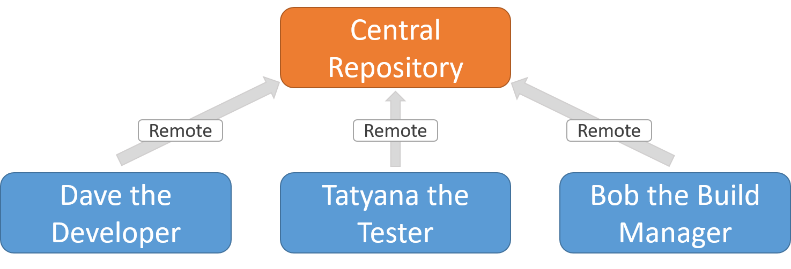

HTML, CSS and JS
The holy trinity
Course overview
1. Introduction
- Your teacher
- Course structure
- The Web platform
- The masterplan
- Exercise - Gearing up
- Git and Github
- Exercise - set up repo
2. HTML
- Describing a universe
- Encoding data
- Exercise - geneaology
- XML
- Exercise - Back to the past
- HTML documents
- HTML content
- Exercise - Hello world!
- Semantics
- Two special elements
- Exercise - Fighting Fantasy
3. CSS
- Overview
- CSS selectors
- Element descriptions
- Combinators
- Exercise - Battle
- Inclusion
- Basic styles
- Box model
- Property values
- The browser devtools
- Exercise - Style the game
4. More CSS
- Pseudo Elements
- CSS Deluxe
- Exercise - Build step
- Transitions
- Animations
- Exercise - Going overboard
- Order
- Good behaviour
- Layout
- Flexbox
- Exercise - Faux columns
5. JavaScript basics
- Introducing JavaScript
- Inclusion
- JS at a glance
- Exercise - testing the waters
- Objects
- Arrays
- Functions
- Exercise - cooking time!
6. The DOM
- Introducing the DOM
- Manipulating the DOM
- Catching DOM events
- Exercise - Guess again!
- Architecture
- Exercise - Guess even more!
7. jQuery
- jQuery intro
- jQuery refresher
- Exercise - jQuery
- Event delegation
- Exercise - ToDo app
8. TypeScript
- TypeScript intro
- Exercise
- Types
- Exercise
- Classes and interfaces
- Exercise
9. Angular, part I
- Deep end - exercise!
- Models and views
- Exercise
- Conditional rendering
- Exercise
- Repeated rendering
- Exercise
- Styles
- Exercise
- Behavior
- Exercise
- React
10. Angular, part II
- Build toolchain
- Exercise
- ES6 modules
- Exercise
- Components
- Exercise
- Routes
- Exercise
- Forms
11. Appendix: ES2015
- Versatile object definitions
- Destructuring and rest
- Versatile function definitions
- Spreads
- Modules
- Classes
- Decorators
- Miscellaneous
Introduction
Getting started
Sections in this chapter:
- 1. Your teacher
- 2. Course structure
- 3. The Web platform
- 4. The masterplan
- 5. Exercise - Gearing up
- 6. Git and Github
- 7. Exercise - set up repo
1-1. Your teacher
(Actually I stole this whole slide deck from a colleague)
Let's start with the most important - me!
Contact information:
- Email: carl@edument.se
- Blog: http://strangelyconsistent.org
- Twitter: carlmasak
- Phone: 072-3042141
Don't be a stranger!
But, fair warning - I spend my days singing this gospel:

Which means you'll have to put up with quotes like this:
If I were an evil overlord who wanted the world to adopt my programming language, I would make it the scripting language in web browsers
1-2. Course structure
How we'll go about things
The course is divided into several chapters, where you're currently in the first.
We access the chapters from an index, giving you a birds-eye view of the entire contents.
Each chapter has many sections:
In the printed material (or PDF) and in the presentation top-right corner, the slides are numbered X‑Y‑Z where...
Xis the number of the current chapterYis the number of the section section within that chapterZis the number of the slide within that section
From now on, all sections will be one of two types:
- Learning sections
- Exercise sections
When you see this symbol at the top of a section, that means it is a learning resource.
A short sentence or two will say what we want to learn.
This symbol means the section is an exercise.
Towards the bottom of the exercise sections you'll find a Definition of Done slide
- which gives you
- a check list
- to know when
- you are finished
Below that, if it is a coding exercise, you'll also find a link to a solution on a slide with this symbol.
1-3. The Web platform
a.k.a. the holy trinity
Let's set the scene by gaining a high-level understanding of the web platform!
The Web platform is really the combination of three separate technologies:
(There was also a dark time when Java applets were used in webpages, but we don't talk about that...)

(And we don't acknowledge the existence of flash either)
Traditionally, web apps looked like this:

Web tech was just the UI. The real coding was done in php / ruby / java / .NET.
But a modern SPA (Single Page Application) is more like this:
Additionally, web tech has escaped from the browser, since there are tools that can bundle web apps so they run elsewhere:
And blurring the lines even further - there are framework to compile web apps to native code:

In essence: web tech is on the (high) rise, and even if you intend to stay in a sheltered Java garden, knowledge about the web platform will serve you well.
1-4. The masterplan
tajmad och klar in i minsta detalj
Let's agree on the course-wide objectives!
Some practical stuff:
- The gist: for 9 days I will teach you the fundamentals of web development.
- The course will be centered around these slides.
- I will update them during the course.
- You will have a link to the live slides...
- ...as well as a PDF version.
Some less practical stuff:
- The focus will be on concepts and the big picture, not the nitty gritties.
- We will strive to adhere to accelerated learning's focus on exercises, but...
- ...conveying the big picture does require some theory.
- We will talk about the situation right now, and not dwell on what has been.

Content-wise, our path will look something like this:

- It is forbidden to keep a question to yourself. Ask away! Because,
- there are no stupid questions. Only stupid people.
The goal boiled down - we want you to...
- understand the fundamentals of the father HTML, the son CSS and the holy spirit JavaScript.
- know where to go fo the specifics
1-5. Exercise - Gearing up
Assembling the toolkit
Before we can get started for real we must make sure that you're adequately equipped!
This isn't really an exercise as such, just me telling you to install a bunch of stuff.
We won't talk about what the stuff does here, that'll come later!
We're going to ensure we have the following installed:
- aNode
- bPython
- cGit
- dVisual Studio Code
- eMDN (not a program, but a tool nontheless!)
If you already have some/all of it, simply skip that instruction!
First we install NodeJS!
Surf over to https://nodejs.org/.
You'll get to choose between "Recommended" and "Latest":

It doesn't really matter, but you can pick "Recommended".
When you go through the installer, it is important that you make Node available in the terminals!
This option is usually a checkbox called something like "Add to path", or "Add to environment variables".

Again there is a choice between versions:
You can select the latest which is 3, but if you already have 2 installed, that's ok too.
And also like Node, we must make Python available in the terminals!
Same thing again: This option is usually a checkbox called something like "Add to path", or "Add to environment variables".
Now, time for Git!

You likely already have it, but if not, get it from https://git-scm.com/downloads.
And, same as before, we must make Git available in the terminals by checking the relevant box in the installation.

But, I want to use SomeOtherEditor instead!
Tough luck! :)
Serious answer: You're welcome to use whatever you want, but throughout these days I'll provide support for VSC.
Finally we need to have access to a reference! We recommend Mozilla Developer Networks (or MDN for short), which generally is better than the more-well-known W3Schools.
Surf to https://developer.mozilla.org and explore for a bit!
You are done when...
- You can type
python --versionin any terminal - You can type
git --versionin any terminal - You can type
node --versionin any terminal - You have VSC installed (or cling on to sth else)
- You've familiarised yourself with MDN
1-6. Git and Github
The tools of the trade
Make sure we have an understanding of Git and Github.
Chances are very slim that you'll be able to do modern web work without using...
- Git for version controlling and collaboration
- Github for an online-hosted master Git repo
Probably you're already up and running (?), but here's a condenced guide for common patterns:
- aFirst-time setup
- bThe idea of a commit
- cThe commit flow
- dExcluding files
- eSeeing what changed
- fA log of changes
- gCentral master repo
If this is your first time with Git, you will want to start by configuring Git to recognize your name and email address.
git config --global user.name "Your Name Here"
git config --global user.email "your_email@youremail.com"
Git centers around the idea of a commit. We make a commit for each change you wish to record in the system
A commit consists of:
- A snapshot of all the files
- A commit message
- An author
- A date
In Git, committing is a two-step process

The add command places a file in the staging area
Below is given that the README file exists
$ git add README.md
The commit command then takes the contents of the
staging area, and creates a commit
$ git commit
[master (root-commit) beb9dfd] Add a README.
1 files changed, 1 insertions(+), 0 deletions(-)
create mode 100644 README
For existing files, add will place the changes to that
file into the staging area, so you can commit changes
with two commands:
$ git add README
$ git commit
(A shorthand for these steps: git commit README)
We want to avoid tracking generated files with Git. Let's say these are created by our build step:
# On branch master
# Untracked files:
#
# main.exe
# main.obj
# util.obj
The solution avoid tracking them is to add a .gitignore file
Content for .gitignore
*.exe
*.obj
Then commit the file
$ git add .gitignore
$ git commit
The .gitignore file won't be of immediate use, but we'll employ it later on!
While git status gives you an overview of your changes, git diff shows what changed.
$ git diff
diff --git a/src/util.c b/src/util.c
index 9fe5927..e826a45 100644
--- a/src/util.c
+++ b/src/util.c
@@ -1,7 +1,7 @@
#include <stdio.h>
-void print_ten_times(char *msg) {
+void print_n_times(char *msg, int n) {
int i;
- for (i = 0; i < 10; i++)
+ for (i = 0; i < n; i++)
printf(msg);
}
This is so useful that VSC has a tab for it:

Typing git log shows a log of all the commits, most recent commit first
commit e20962ebed7b0288922320f217a6a3ab9371727c
Author: jnthn
Date: Wed Apr 18 18:09:02 2012 +0200
Add a .gitignore.
commit eae16e7a7f34d1208ca8267c2fabbbc1eb8e3640
Author: jnthn
Date: Wed Apr 18 17:56:55 2012 +0200
Factor printing out to a utility file.
...
The log command has more options than you can possibly imagine; one fairly useful one is:
$ git log --oneline
e20962e Add a .gitignore.
eae16e7 Factor printing out to a utility file.
887f06c Start le coding!
869cec3 Update README.
8356287 Add a README.
To learn about (literally) dozens more, see:
$ git help log
The most common use of remotes is to set up a central repository

There are a range of hosted Git services out there, which can host your central repository for you
GitHub is the largest today, offering free hosting for public repositories (used by thousands of open source projects) and private hosting for individuals and organizations
Creating an account is free, and easy.
If you haven't already got one, simply go to https://github.com/ and follow the directions!
After creating a repository on GitHub, we need to tell our local Git repository about it by adding it as a remote:
$ git remote add origin https://github.com/<user>/<repo>.git
Since you can have multiple remotes, you have to specify a name as well as the address
The convention used by almost all Git users is to give the central repository remote the name origin, but there's no technical magic to the name.
Pushing is taking commits we have locally and copying them to a remote.
Our first push should use the -u flag:
$ git push -u origin master
After that you can simply push:
$ git push
1-7. Exercise - set up repo
Becoming part of the world
Goal: Track our stuff in an online git repo!
Here's what we need to do:
- ainit git repo locally
- badd a file
- ccreate github repo
- dadd remote to local repo
- estart tracking files
- fdo initial commit
- gpush to github repo
Make a folder somewhere on your hard drive called JS days (or something).
Initialise a git repo in that folder by navigating to it in a terminal and type:
git init
This will create an invisible .git folder where Git does its magic.
(depending on your OS settings this might be hidden)
For this to be exciting we must have something to track!
Therefore, create a file called me.txt or something in the folder. In that file, write:
- how much you know about HTML, CSS and JS, scale 1-10
- what your feelings are towards learning JS :)
Now log into Github and create a new repo using the plus button in the top-right corner:

Give the new repo a fitting name:

No other settings need to be filled. When you're done, hit the green Create repository button at the bottom!
This will transition you to github.com/yourusername/yourreponame. Here, make sure HTTPS is selected and then hit the far-right button to copy the HTTPS path!

If you get tired of typing your password all the time:
You can switch your remote to use ssh if you have time left after finishing the exercise.
Now we need to add the Github repo as a remote in our local one! In the terminal, while somewhere inside your local gitrepo, type:
git remote add origin https://some.url
...where you simply paste the final part to be the correct URL for your repo!
We must now tell our local repo to track the local file!
Since we want to track everything, we can cheat by simply doing this...
git add .
...in the root of our repo.
The former command will stage the initial state of those files. Let's commit it!
git commit -m "initial commit"
Now we must tell our remote repo about the changes we've made:
git push -u origin master
If you reload your repo in the weppage, you should now see your files!
You are done when...
- There's a repo on Github...
- ...that contains all of the code
HTML
Sections in this chapter:
- 1. Describing a universe
- 2. Encoding data
- 3. Exercise - geneaology
- 4. XML
- 5. Exercise - Back to the past
- 6. HTML documents
- 7. HTML content
- 8. Exercise - Hello world!
- 9. Semantics
- 10. Two special elements
- 11. Exercise - Fighting Fantasy
2-1. Describing a universe
What is the matrix data?
HTML is a flavour of XML which is a format for nested data. Thus we need to understand...
...so let's start with nested data!
Data is really just a description of something. We'll map this out in 4 steps:
- aboolean attributes
- battributes with values
- ctypes
- drelations
The simplest piece of information about something are flags, or booleans.
These are attributes that either exist on a thing, or they don't.
When I describe my thing I list all flags:
This thing is
unique,transparentandavailable
Since I listed all flags we know by omission which flags aren't applicable to this thing.
Of course, for this to work, we need a list of all possible flags in this universe!
Then there are attributes with values:
The
ageis38, thepriceis1200andcolorisred
Same thing here; a list of all possible attributes is useful to know what isn't descibed.
In many data universes it is common to divide all things into types. In essence this means that we
- select an attribute applicable to all things
- use the value to classify our things
For example, we might classify people by zodiac signs.
The type of this thing is
Aquarius
But we could also use gender...
The type of this thing is
Male
...or a whole bunch of other possible attributes.
Again, the main idea is that the type is...
- an attribute that all things have
- something that it is useful to divide the universe with
Finally, relationships! Things in our universe - or nodes as they're frequently called in this setting - are normally connected to one another through different means.
A relationship chart for a group of nodes might look something like this:

However, we'll primarily deal with trees, where relationship have the following limitations:
- We only care about parenthood
- Each object only has one parent
- No cyclical relations are allowed
Here's an example of a tree:

So when describing B we could say:
The parent is
A, and children areDandE
The top-level node is typically called the root, and nodes without children are called leaves.
You know, like in a real tree.
It is very common in nested data like this to only describe children.
Thus every node is the top of its own subtree!
2-2. Encoding data
With an understanding of what data is, we can now start discussing data formats.
A data format is simply an idea about how to describe data!
The description process is commonly called encoding:
Interpreting a description to gain an understanding about the data is commonly called decoding or parsing:
Together these processes form a cycle:

Defining a format means deciding how to describe...
- aboolean attributes
- battributes with values
- ctypes
- dchildren
Let's try this!
First, boolean attributes. I decide to just list them with commas inbetween:
unique,transparent,available
Imagine we're programming a parser to interpret this format.
What characters are now legal in a flag?
Everything except , since that is the separator!
But what if I really want a comma in my flag name?
There's an almost universally adopted solution to this:
By preceeding a character with a backslash we agree that we take away it's special meaning!
Thus this...
foo,\,\,\,,bar
...has three flags:
foo,,,bar
What about allowing whitespace so that it is easier for a human to read?
unique, transparent, available
We could, but then the format must deal with that! In other words, space becomes a "magical character" just like commas.
The more of those we have, the more we have to explain.
Next up is attributes with values!
I'm thinking we list them among the flags, but we separate name and value with colons.
unique,transparent,available,age:38,price:1400
Now we have two magical characters: commas and colons.
Now, types. I'm thinking we just put that at the beginning.
Should we invent a new magic character? We don't need to, since "beginning" is unambiguous! On the other hand, a new character makes the type more clear.
I decided to use colons for types too:
aquarius:unique,transparent,available,age:38,price:1400
Somewhat confusing, but what the heck.
Now for the final and hardest part - how do we describe parenthood?
Here's a decision we must make first - do we
- list all nodes in a separate list with ID:s, and then use references when describing the children of a node
- nest the data so that the child descriptions live inside the parent?
Having the children live inside the parent is much more common, since it allows for subtrees. So that's what I'll do!
I decided to
- put all children within parenthesis after the attributes
- separate children via commas
Waaaaait... does that really work? Do we know if a comma separates children or attributes?
And can we tell if we describe a mother with two children versus a grandmother and a mother and a child?
Yup! Mother of two
aquarius:unique(cancer:heavy,age:5(),lion:city:oslo())
versus grandmother:
aquarius:unique(cancer:heavy,age:5(lion:city:oslo()))
It works since all nodes have parenthesis even if they have no children!
If we allowed skipping empty parenthesis it wouldn't work, since a comma might be followed by a new attribute or a type of a child.
2-3. Exercise - geneaology
Adam and Eve, sitting in a tree
Let's try!
- adesign a format
- bmake up some data
- cencode the data
- dpass it to someone
- eget from someone
Design a format! That means you have to make decisions for how to describe....
- type
- flags
- attributes with values
- children
Write these decisions down in a document that defines your format.
Make sure that it is...
- easy to understand
- unambiguous
...since someone else will use it!
Now make up some data!
Take the made-up data and encode it, using the document you authored!
In other words you're acting like a manual encoder.

Take the format document and encoded data and send it to someone. If you've done your job, that person should be able to parse the data!

Likewise, make sure you receive a document and encoded data from someone else, to try your hand at parsing!
You are done when...
- Someone has decoded your data
- You have decoded someone else's data
A stretch task if there is time:
- make someone give you
- data they have decoded but NOT the original encoded data!
- the format document they used
- encode it again
- now get the encoded data from the same person
- does it match your encoding?
In other words - does the data format survive the full cycle?

If not, send an angry informative email to its creator explaining the problem!
2-4. XML
not quite as cool as it used to be?
Understanding how XML (eXtensible Markup Language) has solved the exercise you just did!

XML delimits nodes by an opening and closing tag which contains the type.
<shelf></shelf>
The opening tag is <type>, the closing is </type> - the same but with a forward slash before the type.
Now, flags and attributes! They...
- are put inside the opening tag.
- are separated with whitespace
- uses an equal sign before the value
- has the value within quotes
So if we have a heavy oaken shelf, we get:
<shelf wood="oak" weight="85kg"></shelf>
What about children? They are simply listed between the opening and closing tags!
<shelf wood="oak" weight="85kg">
<animal race="Hieraatus Spilogaster" taxidermist="Bob"></animal>
</shelf>
Whitespace is allowed wherever, which lets us space out the information in a readable way.
For an element with no children, XML has an alternative shorthand with self-closing tags. So instead of this:
<animal race="Hieraatus Spilogaster" taxidermist="Bob"></animal>
we could have done this:
<animal race="Hieraatus Spilogaster" taxidermist="Bob"/>
XML also has a shorthand for text content. Instead of having to do something like this:
<famous-quote><text content="Alea Jacta Est"/></famous-quote>
...we are allowed to put text as a child:
<famous-quote>Alea Jacta Est</famous-quote>
This is commonly called a text node.
Although powerful this also gives rise to further ambiguity. For example, should we encode a book like this...
<book title="Naiv Super" author="Erlend Loe"></book>
...or like this?
<book>
<title>Naiv Super</title>
<author>Erlend Loe</author>
</book>
Also, text nodes mean whitespace magic becomes more complex! Since the above...
...could actually be interpreted as this:

(although the interpreter can be made to skip those whitespace nodes)
This does however allow us to do stuff like this, which can be quite useful:
<truth>I am <emphasis>really</emphasis> good at this!</truth>
As a final note, learn the vocabulary:
- an element is an object / entity / node / thing / whatever you want to call it.
- an element is defined using an opening and a closing tag (or a self-closing tag).
In essence: the element is the node, while the tags are the delimiters for the node.
2-5. Exercise - Back to the past
First blood 2
You all saw this one coming - your mission, should you choose to accept it, is to redo the geneaology in XML!
The translation might mean that you have to make choices, as noted earlier. Bonus points if you reason around these!
Before you submit your work you should validate your xml. A nice service for that can be found at https://validator.w3.org/#validate_by_input.
Note that you have to put this line:
<?xml version="1.0"?>
...at the top of your xml, otherwise the validator will balk because reasons.
You can ignore warnings - as long as you see the green banner, all is well:

You are done when...
- You have encoded the same data as before
- The validator agrees your encoding is correct
If you have time, some discussion points:
- what magical characters does XML have?
- how does XML compare to your format?
2-6. HTML documents
finally getting to the point
Now, finally - HTML!
HTML, or HyperText Markup Language is a flavour of XML (sort of). It is used for encoding documents meant to be consumed on the web.
Much like Photoshop expects a .psd file, your favourite web browser wants .html.
Learning HTML therefore means learning about types and attributes that have special meaning to the browser!
Speaking of types - an HTML document is a tree starting with these three nodes:
The head contains metadata about the document, while body contains the content.
Translated to actual HTML, that becomes the following:
<html>
<head>...</head>
<body>...</body>
</html>
There should only ever be one instance of html, head and body throughout the tree.
By adding an optional leading <!DOCTYPE html> thingie, we tell the browser that this is a modern HTML5 document.
<!DOCTYPE html>
<html>
<head>...</head>
<body>...</body>
</html>
We won't go into (too) much detail, but suffice to say that you should always include it.
So, what metadata goes into the <head> tag?
A heck of a lot of stuff, but we'll now cover two common examples.
First off, we set the document title as a text node in a <title> tag:
<title>My AWESOME site</title>
The browser will then bubble that title up in different ways when your page is displayed.
We can also set the character set as a charset attribute on a <meta> tag:
<meta charset="utf8">
This (hopefully) prepares the browser to show Unicode characters. Without this, for example Swedish characters like å, ä and ö might be displayed wrongly.
Although that's not the entire truth - it also matters how the file is saved.
In short: encoding sucks.
Question: Did you notice something weird on the slide with the meta element code?
Answer: The <meta> element wasn't closed!
<meta charset="utf8">
What's up with that?!
While XML is very strict, HTML takes a looser approach; elements which never have children do not have to be closed. OCD:ers beware!
(to the point: http://xkcd.com/859/
There was a stricter flavour called XHTML which enforced well-formed XML, but that never took off.
2-7. HTML content
let's talk body parts
We just learned about the structure of a document.
Time to start talking about how to represent content!
As we said before the <body> element contains the actual contents of the document, that the browser will show on screen.
So, what does that look like?
Basically, the browser will only display the leaf text nodes.
So let's say we feed it this nonsense:
<!DOCTYPE html>
<html>
<head></head>
<body>
<foo>BAR BAZ! <bin gnu="wee">boo</bin></foo>
<laj boo="foo">gnork.</laj>
Amen.
</body>
</html>
...then the browser would display this:

This means we can deduce that...
- the element types and attributes are simply ignored,
- as are the linebreaks.
- Sequences of spaces are collapsed into a single space.
But of course, there are elements with special meaning to the browser. These fall into two categories:
- Block level elements that take up the full width of the document.
- Inline elements that flow with the text. This is the default, as we saw with our nonsense elements.
The perhaps most common elements are...
- the
<div>, short for divider, which is a generic block level element. - the
<span>, which is a generic inline element.
Quiz: Knowing what you just learned, what would this look like?
<!DOCTYPE html>
<html>
<head></head>
<body>
<div>Thorin Fili <span Kili="Balin">Dwalin</span></div>
<div Oin="Gloin">Dori <div>Nori</div> Ori</div>
Bifur
<span>Bombur</span>
</body>
</html>
Answer: Well, like this of course!

On the subject of generic elements - there are also some generic attributes that we can set on all elements. MDN has a full list here:
https://developer.mozilla.org/en-US/docs/Web/HTML/Global_attributes
We'll take a look at a few of them now:
The id attribute allows us to give a unique name to an element that for some reason is special:
<div id="app-wrapper">...</div>
The id allows us to easily target the element from CSS or JavaScript.
The class attribute is a bit special: in that string of text you can list a number of "classes" separated by spaces. Many elements can share the same class(es), allowing us to group elements together in themed categories.
<div class="wrapper article">...</div>
These groups can then be targeted in CSS or JavaScript.
And just to show an example that doesn't have to do with targeting - the lang attribute...
<div lang="en">...</div>
...allows the browser to provide spell checking and dictionary lookup for the correct language.
Finally - if for whatever reason you want to insert a comment into HTML, or temporarily exclude some elements from the flow, just wrap it within <!-- and -->:
<div>a paragraph of text</div>
<!-- <div>a paragraph which has been commented out</div>
<div>this paragraph too is outcommented</div>-->
<div>but this one is still visible!</div>
Beware that these comments still shows up in the source code, so no cursing!

A final note; dividing all elements into block or non-block is a bit too simple.
MDN has a more detailed content category explanation that you can check out!
2-8. Exercise - Hello world!
Let your presence be known
Setting up a simple HTML workflow.
Time for a quick hello world exercise!

Here's our objectives:
- acreate a document
- bfill in some content
- cspin up a web server
- dview the document in the browser
In your main projects folder, create a subfolder somewhere called helloworld.
In that folder, create a new file and save it as index.html.
Inside the file, type this...
html:5
...and press Tab.
It will magically expand to this!
<!DOCTYPE html>
<html lang="en">
<head>
<meta charset="UTF-8">
<meta name="viewport" content="width=device-width, initial-scale=1.0">
<meta http-equiv="X-UA-Compatible" content="ie=edge">
<title>Document</title>
</head>
<body>
</body>
</html>
That was Emmet at work, a neat shortcut tool which is built in to Visual Studio Code.
Also add some content to the body.
It can contain whatever you want, however to spice things up, it must contain a list.
See the syntax here: https://developer.mozilla.org/en-US/docs/Web/HTML/Element/ul
Time to set up a web server!
You could view the file in the browser by double-clicking it in a file explorer. However, then we'd use the file:// protocol, which doesn't behave exactly as a normal web document.
(for our simple document it wouldn't make a difference)
Open a terminal, and navigate to your main projects folder. When there, type...
python -m http.server
...if you have Python version 3, otherwise:
python -m SimpleHTTPServer
Minimize the terminal window - it'll chug along in the background.
Now open http://localhost:8000 in your browser - you'll see your entire projects folder!
In other words, what we just did is a super-simple way of publishing all projects on a server at the same time!
Finally click your way to your document and make sure you can see it!
Try to rename the file to something.html and visit it again. How does that work differently?
You are done when...
- You visit your document over
localhostin your browser - You can explain what is special about the
index.htmlname
Take a look at https://code.visualstudio.com/docs/editor/emmet and learn more about the neat Emmet shortcuts!
2-9. Semantics
say what you mean
The new web is said to be semantic. Time to learn what that means!
You just met <div> and <span> which are generic elements. But, most elements you use will be semantic.
And this is important - the primary purpose of HTML is to explain to the browser what the content is, so that the browser can make informed decisions on how to display it.
Here are some common elements useful for marking up text:
- A
<p>element represents a paragraph of text. It will be displayed as a block with a bottom margin. - The
<h1> - <h6>elements are headlines. 1 is the most important. They are blocks, with a bottom margin and a bigger and bolder look the lower the number.
Some more;
- A
<strong>element is used for an inline section of text that you want to highlight. Typically displayed in bold. - Similarly there is an
<em>element for emphasis, typically displayed in italics.
So feeding the browser this:
<!DOCTYPE html>
<html>
<head></head>
<body>
<h2>Monday 24/3</h2>
<p>Ashley was so <strong>annoying</strong> today, OMG!!</p>
<p>When I badmouth someone, I do it to their <em>FACE</em>!</p>
</body>
</html>
...we get this:

There are rules on where in the structure an element can appear, which all depend on their semantic meaning.
For example, it makes no sense to nest a paragraph inside another paragraph, so that is forbidden.
In earlier HTML, many elements dealt with appearance. For example;
- there was a
<b>element (short for bold) - and an
<i>element (short for italics)
Now they are deprecated lame, and you're supposed to use the semantic versions:

This is typical for HTML as a whole.
So, what other elements we can use?
Too many to mention, but check the full reference at MDN:
The fact that HTML content is semantic is also the reason why we haven't mentioned layout or style yet.
Those things should only live in CSS-land. HTML is content, CSS is style and layout, and never the two shall meet, lest sadness and pandemonium ensues.
2-10. Two special elements
Tweedle-dum, tweedle-dee
In this section we'll take a quick look at two important elements. First out is the <img> element, which lets us insert images into our documents:
<img src="resources/images/6074.png" title="sooo pretty">
We control the image mainly through two attributes:
srcwhich is an address to the image file. It can be either- relative, pointing to a resource on the same server, or
- absolute, pointing anywhere
title, which will be displayed as a tooltip in most browsers
Note that as an image will never have a child, just like the meta element, we don't need to close it.
When you need all details about a specific element such as the img element, MDN again has you covered:
https://developer.mozilla.org/en-US/docs/Web/HTML/Element/img
Quiz: Now for the second important element, which is arguably the most important of all. Can you think of which it is?
Answer: The anchor, or <a> element as we know it! Without that, there would be no internet.
The anchor has a href attribute which control what page it leads to.
<a href="http://bit.ly/youcannothandlethetruth">the truth</a>
Just like image sources it can be relative or absolute.
Here is MDN:s full spec for the anchor element:
The image tooltip is controlled by a title attribute, but for the link text we used the element children. Why didn't they go for something like this...
<a href="https://www.boardgamegeek.com/" title="best site ever"/>
...instead of the current syntax which requires a closing tag?
<a href="https://www.boardgamegeek.com/">best site ever</a>
We might want to make images or big chunks of text or html into a link, but inside an attribute we can only enter text!
But be careful looking for meaning in syntax details; most of it has just kind of happened.
A final short note; before the anchor, all elements we saw just meant
- semantic meaning and some
- default styling, most importantly whether they are
- block or inline.
But the anchor is the first example of an element that has behaviour.
There are others, but they work mostly in conjunction with JavaScript, so we leave them be for now.
2-11. Exercise - Fighting Fantasy
left or right, block or strike?
Time to test what we've learned by making a (slightly) more complex page!

Apologies, but yes - now you get to make a website.
Not only that, you are going to make a classic gamebook adventure! Anyone recognizes this?
They work something like this:
A dark hallway extends into the unknown. You can just make out the outline of a door to your left.
- to try the door, go to page 43
- to fumble down the hallway, go to page 231
We are now going to emulate the same thing but using a website with links instead of a book with page-turning instructions.
Create a folder for your game inside your JS repo. It should contain an image folder and a .html file per page. The first page should be called index.html.
Just create a few pages, we're just testing the waters here. Don't go overboard!
To start off, create a basic html content structure for your pages. It should...
- have a header section with the name of the game
- a main section where the text and image of the current page is visible
- a navigation section, perhaps a list, with the current possible options
A good tip is to check out the MDN element reference, particularly the Content sectioning part.
As with all work from hereonafter you should add, commit and push your work with Git.
BUT! To spice things up, we're going to work in a new branch!
We'll create a new branch named gh-pages and switch to it, by running this command:
git checkout -b gh-pages
Everything else will still work the same, except that when we push, you must type:
git push origin gh-pages
...so, why this particular branch name?
This branch name has a magical meaning for Github, namely that it'll be automatically published to a web server.
If our github repo has the following URL...
http://github.com/myusername/myreponame
...then the content in a gh-pages branch is published at
http://myusername.github.io/myreponame
In other words, we're using Github as a collaboration tool and a publishing platform!
You are done when...
- You have a working adventure
- The adventure is published online via Github pages
CSS
layout and style
Sections in this chapter:
- 1. Overview
- 2. CSS selectors
- 3. Element descriptions
- 4. Combinators
- 5. Exercise - Battle
- 6. Inclusion
- 7. Basic styles
- 8. Box model
- 9. Property values
- 10. The browser devtools
- 11. Exercise - Style the game
3-1. Overview
CSS from a chopper
Gain a first understanding of what CSS is
CSS, or Cascading Style Sheets, is a language to control style and layout of HTML content.
It wasn't really designed to do much more beyond formatting text, so regarding the layout part it can feel like a bad fit and has a bad rep.

When we say CSS, we are actually talking about two different languages. Take a look at this blob:
div > p:first-child, .first, h4 {
margin-left: 2em;
font-style: italic;
}
If we "zoom out", it could be transcribed as this:
Selector, Selector, Selector {
Style rule;
Style rule;
}
Essentially, CSS consists of selectors and style rules. All elements matching the selectors will get the style rules.
So learning CSS means learning both of these!
3-2. CSS selectors
The targeting mechanism
Understanding what makes up CSS selectors
Let's look at the first part of CSS - selectors!

Just like CSS splits into selectors and style rules, so does selectors split into descriptions and combinators.

These are again two completely different things, so we can even make the case that CSS consists of 3 different languages!
We touched on CSS' bad rep for not being very good at doing layout.
CSS selectors, however, are very good at what they do, namely select a subset of elements from a document.
In fact, CSS selectors are so efficient that JavaScript stole them, because they got the job done better than the programmatic interface that existed before!
Many modern JS frameworks also use CSS selectors, so all in all there are many good reasons to learn them well.
So let's go do that!
3-3. Element descriptions
The wanted poster
Learning how to describe which elements we want
The most important part of a CSS selector is to describe elements that should be selected.

There are five different aspects that we can describe, each with its own syntax:

These can be combined however you see fit. Here is an (exaggerated) example using all of them:
button[disabled]#deletemsg.big:first-child
This would match all
- nodes of type buttons
- that has a disabled attribute
- and id is
deletemsg - and class attribute contains 'big'
- and it is the first child of its parent
As per usual the details can be found on MDN:
https://developer.mozilla.org/en-US/docs/Glossary/CSS_Selector
However, we will now make a few observations for each of the five aspects.
Some notes on the type description:
div
- There's no special syntax, just write out the type.
- They are optional, we can make a description with just other aspects.
- An asterisk
*is a wildcard (sometimes called "universal selector"), but rarely useful.
The id description...
#app-wrapper
- refers to the generic attribute we saw in the HTML chapter
- is prefixed with a
# - will (or should) only ever match 1 (or 0) elements.
The class description...
.container
- again refers to a generic attribute
- is prefixed with a
. - can have multiple classes:
.container.highlight
The attributes description...
[disabled] [foo="bar"] [href^="http"]
- is probably the most complex description aspect
- matches elements depending on attributes and their values
- is surrounded by brackets
- can test simply for attribute existence by just mentioning the attribute
- can test attribute value by using
=and the wanted value - can match value beginning by using
^=
Quiz: Ok, so ^= allows us to match against the beginning of an attribute value. But what would be the point of that last example we saw?
[href^="http"]
Answer: If all local links are relative, which is normally the case, then this would be an excellent way to catch all external links, to make them look or behave differently.
Finally some notes on the pseudo-classes:
:first-child :nth-child(2) :active
- They are prefixed with
: - They allow matching on position or state
- Some take arguments which are given within parenthesis
- The
:not()class takes a full CSS selector - They are obscure but really powerful, so worth getting to know!
A final tip: there is a (work-in-progress) tool for testing selectors at http://selectordissector.netlify.com/.
3-4. Combinators
Many wanted posters!
Learning how to combine element descriptions
Let's now look at the other half of selectors, namely how we combine descriptions!

There are four different ways that descriptions can be combined, which we'll look at one at a time:
The perhaps most common one is the descendant combinator. By having two descriptions with space between...
div p
...we match all elements that
- match the last description
- have an ancestor matching the first description. This can be any number of generations up the tree.
I think it is unfortunate that the descendant combinators doesn't have a non-space symbol, something like this:
div _ p
Whitespace elsewhere in CSS doesn't have meaning, but here it suddenly does. To help with this, think of descendant combinators as invisible symbols!
div > p
The child combinator is very similar to descendant selector, but here the first selector must match the parent and not just any ancestor.
Thus the child combinator is smaller in scope than the descendant combinator.
div ~ p
The sibling combinator is similar to the descendant combinator, but works horisontally instead: it matches elements that...
- match the last description
- have an older sibling that matches the first description
div + p
Finally the adjacent sibling combinator works in the exact same way, but requires the neighbouring older sibling to match the first description.
The two sibling combinators are not often used, but they are good at what they do.
Solving that problem with other means would require brittle workarounds, something you often see from web developers who don't know about them.
3-5. Exercise - Battle
2 (or 3) goes in, 1 comes out
Practicing writing selectors
This is a small intermission exercise to do some practicing on CSS selectors. You'll need...
- a reference at the ready - MDN works fine
- an opponent or two. Literaly - you must be 2 or 3 people.
Go to http://blog.krawaller.se/cssbattle/, and you're met with this simple form:
Enter the same room as your opponent(s), but using different names. You will then all end up in the same battle arena:

Each of you can set your selector, and everyone sees everyone's results.
There are no hardcoded rules, but we suggest you take turn to make a selection, and then the other(s) should make the same selection as fast as possible.
You are done when...
- You've battled it out for a bit
- You feel like you've learned something :)
3-6. Inclusion
smuggling in the paint
Learning how to connect CSS code to a document
There are 3 different ways in which we can apply CSS to our content:
- alinking to a separate
.cssfile - bputting it into a
styletag - cinlining it in the
styleattribute of an element
(We can also mutate styles dynamically with JavaScript, but that comes later!)
A separate file means using a <link> element:
<!DOCTYPE html>
<html>
<head>
<link rel="stylesheet" href="styles/mystyles.css">
</head>
<body>
<!-- lots of HTML content here -->
</body>
</html>
The <style> element simply wraps the CSS code. It can go anywhere, but customarily in the head:
<!DOCTYPE html>
<html>
<head>
<style>
/* Lots of CSS code here */
</style>
</head>
<body>
<!-- lots of HTML content here -->
</body>
</html>
Inlining in the style attribute means we don't need selectors, since the style rules are applied to this particular element.
<p style="font-weight: bold;">It will never happen again.</p>
Quiz: Which method do you think is the most common, and why?
Answer: In almost all situations a separate file is preferred, since that gives us a good separation of concerns. Style tags arguably gives us that too, so the primary thing is to be careful with inlining styles.
3-7. Basic styles
lipstick on a p
Learning the style rule syntax
We spent a lot of time talking about selectors. Now for the style rules!

The syntax is simple enough:
font-weight: bold;
- You type out the property you want to style,
- then a colon separator,
- followed by the value for the property,
- and finally an ending semicolon.
We can have as many rules as we want within the curly braces:
.article p {
font-weight: normal;
background-color: #EEE;
margin-bottom: 1.5em;
}
So, what properties can we style? Lots and lots!
Let's first look at padding and margin.
Demonstrating padding
<div class="box">Carpe noctem</div>.box {
display: inline-block;
background-color: gold;
}Initially, we have no padding.
.box {
display: inline-block;
background-color: gold;
padding-left: 20px;
}We can add padding to the left...
.box {
display: inline-block;
background-color: gold;
padding-right: 20px;
}...or the right...
.box {
display: inline-block;
background-color: gold;
padding-top: 20px;
}...or the top...
.box {
display: inline-block;
background-color: gold;
padding-bottom: 20px;
}...or the bottom.
.box {
display: inline-block;
background-color: gold;
padding: 30px 10px;
}We can add vertical and horisontal padding at the same time.
.box {
display: inline-block;
background-color: gold;
padding: 30px;
}Or all directions at once!
Demonstrating margin
<div>Above</div> Left
<div class="box">~Carpe noctem~</div>Right
<div>Below</div>.box {
display: inline-block;
background-color: gold;
}Initially, we have no margin.
.box {
display: inline-block;
background-color: gold;
margin-left: 20px;
}We can add margin to the left...
.box {
display: inline-block;
background-color: gold;
margin-right: 20px;
}...or the right...
.box {
display: inline-block;
background-color: gold;
margin-top: 20px;
}...or the top...
.box {
display: inline-block;
background-color: gold;
margin-bottom: 20px;
}...or the bottom.
.box {
display: inline-block;
background-color: gold;
margin: 10px 30px;
}We can add vertical and horisontal margin at the same time.
.box {
display: inline-block;
background-color: gold;
margin: 30px;
}Or all directions at once!
In essence -
- padding becomes part of the element, while
- margin sizes the void around it that no other element can enter.
Between the margin and padding you can apply a border.
Demonstrating border
<div class="box">Carpe noctem</div>.box {
display: inline-block;
background-color: gold;
border-right-width: 10px;
border-right-style: solid;
border-right-color: darkred;
}We can add border in any cardinal direction.
.box {
display: inline-block;
background-color: gold;
border-right: 10px solid darkred;
}Size, style and color can be given at once.
.box {
display: inline-block;
background-color: gold;
border: 10px solid darkred;
}And we can set all borders at once.
You've already seen background-color - the good twin to that is color which colours the text.
Let's take a closer look at the color values!
Color values
<div class="box">Showing colors</div>.box {
border-width: 15px;
border-style: solid;
width: 150px;
height: 150px;
color: darkred;
border-color: gold;
background-color: burlywood;
}There are many color constants.
.box {
border-width: 15px;
border-style: solid;
width: 150px;
height: 150px;
color: #8B0000;
border-color: #FFD700;
background-color: #DEB887;
}They are all shorthands for hex definitions...
.box {
border-width: 15px;
border-style: solid;
width: 150px;
height: 150px;
color: rgb(139, 0, 0);
border-color: rgb(255, 215, 0);
background-color: rgb(222, 184, 135);
}...which can also be expressed as RGB values.
There are many more properties, but now you have enough to get started.
Note that these properties were all for looks - later we'll talk more about layout!
3-8. Box model
The building block blueprint
Understanding the box model
You already met margin, border and padding. They make up the box model:
Intimately connected to this is the notion of block content and inline content. This is controlled though the display property.
Understanding the difference between these two is absolutely central!
Block vs inline
block vs inline display mode<div>Once upon a time there was a <strong>very</strong> scary gnome.</div>strong {
background-color: red;
height: 50px;
display: inline;
}By default strong elements are inline, and flows with the text. Height has no meaning.
strong {
background-color: red;
height: 50px;
display: block;
}But change to block and see what happens!
strong {
background-color: red;
height: 50px;
display: inline-block;
}Now inline-block! Woo!
Depending on which display mode an element has, it will behave differently in a number of ways, and other CSS properties get different meaning.
There used to also be some confusion as to what was actually part of the "box":
Box Sizing
<div class="ruler">I am 100px</div>
<div class="box"></div>.ruler {width: 100px; background-color: magenta;}
.box {
background-color: green;
width: 100px;
height: 100px;
padding: 10px;
border: 10px solid red;
box-sizing: content-box;
}The default is called content-box, and doesn't include padding and border.
.ruler {width: 100px; background-color: magenta;}
.box {
background-color: green;
width: 100px;
height: 100px;
padding: 10px;
border: 10px solid red;
box-sizing: border-box;
}If we do want to include padding and border, we use border-box.
As a final tentacle from the box model, it can in part be used to control visibility of an element.
Visibility
visibility: none<div>Once upon a time there was a <strong>very</strong> scary gnome.</div>strong {
visibility: visible;
}All elements have visible as default visibility.
strong {
visibility: hidden;
}Note how it still takes up the same space!
strong {
display: none;
}While if we set display to none, it takes up no space at all.
3-9. Property values
What currencies are ok?
Starting to develop a feel for legal property values
So we saw a few basic styles flash by before. But what values can they have?
Well, of course, that depends.
Many properties have unique values that only they can have.
You've already seen the color constants. Let's look at some others specific to the background image!
Background image
<div class="box"></div>.box {
height: 150px;
width: 300px;
background-color: gold;
background-image: url(resources/images/css3.png);
}The background is repeated by default.
.box {
height: 150px;
width: 300px;
background-color: gold;
background-image: url(resources/images/css3.png);
background-repeat-x: no-repeat;
}We can tell it not to repeat the image.
.box {
height: 150px;
width: 300px;
background-color: gold;
background-image: url(resources/images/css3.png);
background-repeat-x: no-repeat;
background-position: center;
}The background can be positioned.
.box {
height: 150px;
width: 300px;
background-color: gold;
background-image: url(resources/images/css3.png);
background-repeat-x: no-repeat;
background-position: center;
background-size: 100% 100%;
}And sized according to the box.
A lot of properties take a length, and these can have different units.
These can be divided into absolute and relative units.
Length units
<div class="box">Testing!</div>.box {
width: 70px;
background-color: magenta;
}Pixels, px, is perhaps the most common unit.
.box {
width: 70pt;
background-color: magenta;
}A point, pt, is 1/72 inch.
.box {
width: 70mm;
background-color: magenta;
}We can also use regular units such as millimeter, mm.
.box {
width: 70%;
background-color: magenta;
}Percentage in this case means percent of the parent width.
The percent unit
% unit<div class="shell">Container
<div class="box">Box!</div>
</div>.shell {
width: 200px;
background-color: magenta;
}
.box {
width: 50%;
background-color: red;
}The percentage relates to the parent width.
.shell {
width: 300px;
background-color: magenta;
}
.box {
width: 50%;
background-color: red;
}Change the parent and the box changes too!
The EM unit
em unit<div class="shell">Testing ems
<div class="box"></div>
</div>.shell { font-size: 14px; }
.box {
width: 12em;
height: 3em;
background-color: red;
}The em is relative to the parent font.
.shell { font-size: 20px; }
.box {
width: 12em;
height: 3em;
background-color: red;
}We increase parent font, and the box grows!
However, there are also some special values that all properties can take.
initialinheritunset
Defaults with inherited prop
initial, inherit and unset<div class="parent">
So:
<span style="color: initial; padding: initial;">Initial </span>
<span style="color: inherit; padding: inherit;">Inherit </span>
<span style="color: unset; padding: unset;">Unset </span>
<span>Unruled</span>
</div>.parent { color: red; padding-left: 10px; }
span { }foo
.parent { color: red; padding-left: 10px;}
span { color: blue; padding-left: 20px;}Bar
.parent {}
span { color: blue; padding-left: 20px;}BAZ
Learning all the details is impossible. You must have a reference such as MDN!
3-10. The browser devtools
Your new BFF
Learning about the devtools and why they're awesome
Contrary to the web developer of yesteryear, today we have very powerful developer tools built into almost all browsers. We'll be looking at Chrome, but there are analogs in the others.
They show you the element tree and provide info on specific elements.
This is especially useful for
- CSS debugging, as you can see exactly what styles are applied and from where and with which selectors they came.
- CSS experimenting, as you can toggle the styles, try out new values and even add completely new styles.
3-11. Exercise - Style the game
Hiring an illustrator
Having a CSS workflow and getting to know it more
Time to return to your choose-your-own-adventure and make it slightly less drab!

In other words: add some CSS to the site you made earlier!
Here's the plan:
- aGet CSS syntax checks running in VSC
- bCreate a CSS file and link it
- cAdd some neat styling
- dDebug it in the browser
First, create a styles.css file in the game project!
Since we want the same styling on all pages, and aren't using any templating system, you should put the styles in a style sheet which you then link into all pages.
Before we get started on the styles, we want good CSS support in VSC.
But, there's no syntax checking built in!
We fix this by installing our first extension!
Go to the extensions tab and search for stylelint:
Click install, then reload to make it work!
Now, add styles! How pretty must it be? Not very, but here are some suggestions:
- Find a style for each different section (header, main, footer, text, links, etc), and try to make them look clearly defined.
- Also make a good container for the entire app. These commonly have side margins.
- Experiment with typography. Try out different fonts, letter spacing and line spacing.
We encourage you to use this as an excuse to get to know the dev tools. You should do the experimenting in there, and only add the CSS code when you have a good idea of what you want.
Finally, debug time! While checking your work in the browser, use the devtools to...
- check that the styles are being applied as expected
- try different values for styles
You are done when...
- You've applied a bunch of styles
- You're getting linting feedback in VSC
- You've done some debugging in the browser
Challenge:, use the :first-child and :first-letter pseudoclasses to make some nice drop caps.

There are some good pointers at CSS-Tricks: https://css-tricks.com/snippets/css/drop-caps/
Challenge: Use the @font-face feature to bring in some more game-like font!

You can also cheat by using https://fonts.google.com.
Challenge: If you grow bored with styling your game - do a pull request to the CSS battle app to make it look less crap!
The git repo is at https://github.com/krawaller/cssbattle, and my sad CSS is in styles.css in the root.
More CSS
sharpening the tools
Sections in this chapter:
- 1. Pseudo Elements
- 2. CSS Deluxe
- 3. Exercise - Build step
- 4. Transitions
- 5. Animations
- 6. Exercise - Going overboard
- 7. Order
- 8. Good behaviour
- 9. Layout
- 10. Flexbox
- 11. Exercise - Faux columns
4-1. Pseudo Elements
Where did you come from?!
Understanding what pseudo elements are and how to create them.
You've already met pseudo classes. However, the pseudo elements do something we haven't yet seen - they add new elements to the document!
Say we have this p element:
<p>Eeexiiit <em>light!</em> Eeenteeer <em>niiiight!</em></p>
And we target it with this CSS:
p:before {
content: "♬ ";
}
p:after {
content: " ♫♩"
}
Then we get this output:

Note however that the notes don't actually come before and after the p element, but rather become the youngest and oldest children:
In other words, :before and :after are misleading names, they should have been called something else. Also there should be an actual before and after, but there isn't.
But still, the pseudo elements are a powerful tool when the moment is right.
Note that you don't have to use it for text content - we can also set display to block, add background images and all sort of shenanigans!
4-2. CSS Deluxe
bells and whistles
Learning about CSS preprocessors
Although CSS has grown more powerful, there is still a lot to be desired.
- variables
- computations
- mixins
- nested declarations
This has driven many to try to add a layer on top of CSS. The two most popular solutions are SASS and LESS.


Read more at http://sass-lang.com/ and http://lesscss.org/.
The idea is that we write in a language that compiles down to regular CSS.

The LESS homepage shows this LESS code:
@base: #f938ab;
.box-shadow(@style, @c) when (iscolor(@c)) {
-webkit-box-shadow: @style @c;
box-shadow: @style @c;
}
.box-shadow(@style, @alpha: 50%) when (isnumber(@alpha)) {
.box-shadow(@style, rgba(0, 0, 0, @alpha));
}
.box {
color: saturate(@base, 5%);
border-color: lighten(@base, 30%);
div { .box-shadow(0 0 5px, 30%) }
}
...which compiles to this CSS:
.box {
color: #fe33ac;
border-color: #fdcdea;
}
.box div {
-webkit-box-shadow: 0 0 5px rgba(0, 0, 0, 0.3);
box-shadow: 0 0 5px rgba(0, 0, 0, 0.3);
}
Of course, using something like this means that we require a build step!
But as you will find, this is something that is regularly used in the web world, even though HTML, CSS and JS are all interpreted.
Why? Many reasons, three of which are:
- use preprocess languages for CSS or JS
- write in the latest tech, dumb it down for the browser
- minification (strip whitespace and comments)
4-3. Exercise - Build step
LESS is more
Trying out a CSS preprocessor
No surprise - we'll now integrate LESS into our game!
- ainstall LESS
- buse LESS syntax
- cgenerate CSS
As we saw, this means that we now need a build step which compiles the LESS code into CSS. But, to do that we need to install LESS!
When you installed Node you also got npm, which is a package manager that runs in Node. LESS is distributed as such a package.

You can read more about npm here: https://www.npmjs.com/
LESS is installed as a global command. Open a terminal - it doesn't matter in which folder you are - and type:
npm install -g less
Time to employ LESS in our project! You need to...
- Rename your
.cssfile to.less. CSS is valid LESS! - Read up on LESS and use some features in your file.
Now that we have a .less file with LESS code, we need to compile it to CSS!
When we installed LESS, we got access to the lessc command.
You use it like this...
lessc path/to/styles.less wanted/output/path/styles.css
...with the paths adjusted for your project.
You are done when...
- There's a
.lessfile using some LESS syntax - There's a
.cssfile compiled from the.lessfile - The game looks the same (or better)
Challenge: Of course, having to remember to compile the .less file is tiresome. It is therefore common to set up an automagic compiler. Try your hand at this! There are many solutions, one suggestion is to use this: https://github.com/jonycheung/deadsimple-less-watch-compiler.
Challenge: If you still have time and/or energy left over, try to find some use for pseudo elements in your app!
4-4. Transitions
Slowing things down
Wielding the powerful transition property
Normally, if a style property of an element changes value, the change is instantaneous.
For example, we apply this style...
#instantexample:hover {
transform: rotate(45deg);
}
...to this div, so try hovering over it!
This div is exactly the same as before, but with one additional rule:
#transitionexample {
transition: transform 1s ease;
}
Try hovering again!
As you probably figure, transitions are a really powerful way to do CSS-only animations, and well worth getting to know well.
Some notes;
- The full shorthand syntax is
transition: <property> <duration> <timing function> <delay> - We can transition more than one property by separating them with
,:transition: width 2s, height 2s - As with many new / experimental technologies some browsers might require vendor prefixes still:
-webkit-transition,-ms-transition, etc. Although the need is growing less and less frequent.
As per usual there are lots more detail on MDN:
Btw, the transform property that we used as a transition example is really powerful, and worthy of looking up for its own sake!
4-5. Animations
ACTUAL animations, that is!
Learning about CSS-based animations
With transitions we can do simple animations from one state to another.
But CSS also provides actual animations where we change between predefined frames!
Behold this beautiful example!
An animation consists of two parts. First we name the animation and define the keyframes, which contain property values to be reached at various points during the animation timeline. These values will transition from one point to the next.
The earlier animation was defined like this:
@keyframes looparound {
0% {
top: 0;
left: 0;
}
25% {
top: 0;
left: 470px;
}
50% {
top: 170px;
left: 470px;
}
75% {
top: 170px;
left: 0;
}
100% {
top: 0;
left: 0;
}
}
And our element then used the animation by specifying name, duration and repeats:
#animationexample > div {
animation-name: looparound;
animation-duration: 3s;
animation-iteration-count: infinite;
}
If we only want to go from one set of property values to another, then we might as well just use transitions.
But there are more than two frames involved we must use animations instead!
4-6. Exercise - Going overboard
Because more is always better
Getting some experience with transitions and animations
Our newfound knowledge leaves us no choice - we absolutely must add transitions and animations to our game!
Look your game over, and any place where you can cram movement, do it!
Don't forget to edit the .less file and regenerate your .css.
We'll never edit the .css file directly again!
You are done when...
- Things are moving around at an annoying level
- The game is updated on Github
Challenge: For extra annoyment points, read up on transform and do some transition or transformation with that! I have it from good authority that users LOVE when you use skew! Promise!
4-7. Order
let the race begin!
Understanding who wins a CSS argument
So, styles can be defined in many different places. But, what happens when the same style is applied in different ways?
The browser follows a strict pecking order:

There were some things in there that we don't yet know about. First, !important - this is a keyword you can add to the end of a rule to bring it to the top of the pecking order.
.special {
background: yellow !important;
}
But as noted this is considered bad practice, just as inline styles are considered harmful.
So if we avoid those two...
...the primary order decider is specificity. But, what is that?
Specificity is the "weight" of the rule, which is calculated according to a formula. The gist;
#idselectors are the heaviest- then
.class,[attributes]and:pseudo - and finally type.
Say you have this style...
p:first-line {
margin-left: 2em;
}
...but you are also using an external CSS sheet which overrides your style.
Then you need to make your style more specific, often by prefixing it with ancestor specifications that you otherwise don't need:
body div#app-wrapper p:first-line {
margin-left: 2em;
}
A final note; since browser defaults can vary, it is common to use a reset sheet to be (more) sure that everything looks the same in different browsers.
An old but popular sheet is the one by CSS guru Eric Meyer which you can find here: http://meyerweb.com/eric/tools/css/reset/
And with a CSS reset sheet, we have simplified our world a little bit further!

4-8. Good behaviour
Our code of conduct
Having some guidelines to follow
We've touched upon most of these points already, but let's gather up the stone tablets of CSS behaviour rules!
Thou shalt not use visual elements
<br>for a linebreak<hr>for a horisontal ruler
These are FORBIDDEN!
Thou shalt not use visual attributes
<div bgcolor="red"><div height="300">
These are VERBOTEN!
Thou shalt keep the
htmlas clean as possible
Instead of doing this...
<p class="firstParagraph">Little red riding hood...</p>
<p>Then came the big bad wolf...</p>
...and this...
.firstParagraph {
background-color: #CCC;
}
...you should skip the class and just do this:
p:first-child {
background-color: #CCC;
}
Try to solve the selection without cluttering the html, as much as possible.
Thou shalt keep your selectors simple
Don't make your selectors more specific than they need to be!
Question: Ehm, doesn't that commandment collide with the previous one? Isn't it easier to avoid cluttering the html if we have more complex selectors? And easier to write short selectors if we add some classes or extra divs to the html?
Answer: Yes. :D
Thou shalt keep your CSS organized
Keeping order in your Java project is easy - give classes good names, sort them in modules, etc. But doing it in CSS is hard!
Still, you must try! Use comments, file separation and structure. A good tip is to do whatever Nicole Sullivan says: http://www.stubbornella.org/
There are many who argue that relying on specificity at all is dangerous and doesn't scale.
And we can avoid specificity by using very strict naming conventions. For example, BEM (short for Block Element Modifier) uses specific classnames for everything and nothing else.
And now for the most important commandment of all.
Are you ready?
Thou must be patient!
You now know the basic rules, but probably feel a whole lot of frustration.
This is because I have taught you the grammar, but you still have to learn the vocabulary. To this, alas, there are no shortcuts.
4-9. Layout
setting the table
A first sniff on layout with CSS
Now we'll take our nose off the floor and start looking at the bigger picture. How do we lay things out in CSS?
To start our journey, let's look at a few different solutions to something that's really hard to do in CSS - centering stuff vertically!
Vertical centering
<div class="shell">
<div class="piece">Center me!</div>
</div>.shell {
height: 100px;
background-color: #8799db;
display: table;
width: 100%;
}
.piece {
background-color: #efef8f;
display: table-cell;
vertical-align: middle;
}Curiously, vertical-align is only respected inside table-cell elements.
.shell {
height: 100px;
background-color: #8799db;
display: flex;
flex-direction: column;
justify-content: center;
}
.piece {
background-color: #efef8f;
}can also use flex!
.shell {
height: 100px;
background-color: #8799db;
position: relative;
}
.piece {
background-color: #efef8f;
position: absolute;
top: 50%;
transform: translateY(-50%);
}dwfer
.shell {
height: 100px;
background-color: #8799db;
line-height: 100px;
}
.piece {
background-color: #efef8f;
display: inline-block;
vertical-align: middle;
}exploiting that vertical-align positions inline items versus the line-height.
.shell {
height: 100px;
background-color: #8799db;
position: relative;
}
.piece {
background-color: #efef8f;
display: inline-block;
height: 40px;
position: absolute;
bottom: 0;
top: 0;
margin: auto 0;
}Will only work with set height on child.
.shell {
height: 100px;
background-color: #8799db;
}
.shell:before {
content: ' ';
display: block;
height: 50%;
margin-bottom: -20px;
}
.piece {
background-color: #efef8f;
display: inline-block;
height: 40px;
}also needs set child height
Centering stuff horisontally is easier, but still worth exploring:
Horisontal centering
<div class="shell">
<div class="piece">Center me!</div>
</div>.shell {
height: 100px;
background-color: #8799db;
text-align: center;
}
.piece {
background-color: #efef8f;
display: inline-block;
width: 150px;
text-align: left;
}Easiest is to make block text-centered blah
.shell {
height: 100px;
background-color: #8799db;
}
.piece {
background-color: #efef8f;
width: 150px;
margin: 0 auto;
}Can also do auto margins. Won't work without fixed width!
.shell {
height: 100px;
background-color: #8799db;
display: flex;
justify-content: center;
}
.piece {
background-color: #efef8f;
width: 150px;
}Flex!
.shell {
height: 100px;
background-color: #8799db;
position: relative;
}
.piece {
background-color: #efef8f;
width: 150px;
position: absolute;
left: 50%;
transform: translateX(-50%);
}Same absotrans as vert
We also need to discuss the concept of floats:
Float
<div class="reactlogo"></div>
<div class="story">The fox jumped over the little stream. This was quite the adventure, let me tell you! Omg omg omg foo</div>.reactlogo {
display: inline-block;
}
.story {}The logo is an inline block.
.reactlogo {
display: inline-block;
float: left;
}
.story {}Now note how all lines wrap around it!
.reactlogo {
display: inline-block;
float: left;
}
.story { clear: left; }We can expressively clear our way below floats.
4-10. Flexbox
solving the age-old riddle
Getting to know Flexbox
There are two common problems that are embarrasingly hard to solve using regular CSS:
- centering things vertically
- having columns of equal height
CSS3 finally brought us a remedy: Flexbox!
The basic idea is simple; in this new display mode you select...
- opt in to the new display mode (
display: flex) - choose vertical or horisontal direction (
flex-direction) - how the content should be aligned along the direction axis (
justify-content) - and also perpendicular to the direction axis (
align-items)
There are some more flex properties, and also some for the children in a box, which gives you even more control.
This is hard to visualise from textual explanations, so try out an interactive tutorial here: http://blog.krawaller.se/flexboxdemo/
There are also two popular games that demonstrate the concept:
- Flexbox Froggy @ http://flexboxfroggy.com/
- Flexbox Defence @ http://www.flexboxdefense.com/
Remember how CSS selectors were so good at what they did that they leaked over into JS? It is the same with flexbox - it turned out to be such an efficient way to lay out things that it is used in many frameworks, most noteably by React Native.
4-11. Exercise - Faux columns
The holy grail
Trying out Flexbox ourselves
We mentioned columns of equal height before:

More specifically, we mean
- Two columns who both extend to the bottom of their parent
- The longest column desides the height of the parent
As previously stated, this is very difficult with regular CSS.
But, rather easy with Flexbox, which is what I used to create the screenshot!
And now, of course it is your turn to recreate the screenshot using HTML and CSS!
Some pointers;
- I got the text from http://baconipsum.com/
- The structure should just be a div with two divs inside
- You will need to play with
flexon the children - Experiment yourself first, but if you get stuck then go googling!
Challenge: If you're really serious about your webdev chops, find a way to steal my exact colours!
JavaScript basics
the holy spirit
Sections in this chapter:
- 1. Introducing JavaScript
- 2. Inclusion
- 3. JS at a glance
- 4. Exercise - testing the waters
- 5. Objects
- 6. Arrays
- 7. Functions
- 8. Exercise - cooking time!
5-1. Introducing JavaScript
better the devil you know
A first meeting with JavaScript
So, JavaScript! It is:
- aFunctional
- bObject Oriented
- cDynamically typed
- dLoosely typed
- eSyntactically C-like
What?
Functional, meaning that it emphasizes the application of functions
This in contrast to imperative programming, which emphasizes changes in state.
Object Oriented, meaning that it uses objects (data structures consisting of data and behavior) and that most things are objects.
Dynamically typed, meaning that it performs the majority of its type checking at run-time as opposed to at compile-time
Loosely typed, meaning that any value can be stored in any variable or bound to any parameter, and JavaScript will do any necessary conversions.
Syntactically C-like, for instance it has..
{...}for blocks;as a statement separator=for assignment/* ... */and//for comments
Of these 5 characteristics, the one that causes the most initial confusion is likely loose typing.
So your illustrious teacher will now demonstrate what that entails!
5-2. Inclusion
plugging it in
Learning how to run JS in the browser
There are three ways to include JS in a web app
- ascript element containing code
- bscript element referencing a file
- cinline event handler in an element attribute
A script element with code might look like this:
<script type="text/javascript">
/* ...javascript code here... */
</script>
While a script element referencing a separate file might look like this:
<script type="text/javascript" src="/js/mycode.js"></script>
Note that you should not self-close the script element, as that might cause weird behaviour!
An inline event handler looks like this:
<button onclick="alert('You clicked, OMG!');">Don't click me</button>
As you might have guessed, inline handlers are a bad idea.
Question: Wasn't all of this extremely similar to how CSS inclusion works?
Answer: Yes! :)
Btw - remember that we now just talked about including JS in a web app, that is, a HTML + CSS + JS app that runs in the browser.
But JS can run in other places too - in Node, servers, IoT - anywhere!
You have already installed Node, although we haven't used it for JS execution yet.
Doing so is easy! If we have a JS file at path/to/myfile.js, relative our current terminal position, we simply type:
node path/to/myfile
And if you just want to experiment, another easy way is to use the console in the browser dev tools!
5-3. JS at a glance
a whirlwind tour!
Getting a feel for the basics
Hold on tight, for now we'll run through some JS basics!
To try the snippets, paste them into the Console tab of the Chrome developer tools.
There is no main function - JS code is simply run from top to bottom.
We declare variables using the let keyword, and assign using =. No type specification needed, since JS is loosely typed.
let x = "Hello world!";
We end statements with ;. These are actually optional, but leaving them out can cause problems!
Since a variable can contain any type, the language offers a way to check:
console.log(typeof x); // "string"
The output from console.log is visible in the Developer tools console tab.
You saw string literals earlier. There are also...
- numbers:
3,2.04(all numbers are floating points) - booleans:
true,false
And two single-value voidish types:
- null:
null - undefined:
undefined
Equality testing is done in two ways:
==(which does type coercion, so3 == "3"istrue)===(also comparing type, so3 === "3"isfalse)
There are also != and !== negative variants.
You will recognize if statement syntax:
if (guess === correctAnswer){
console.log("Correct!");
} else {
console.log("Not quite...");
}
The else part is of course optional.
Also the for loop is rather classical:
for(var i=0; i<1000; i=i+1){
console.log(i+" bottles of beer on the wall");
}
As is the while:
while(x > 0){
x = x-1;
console.log(x+" bottles left");
}
This was a very superficial tour to give you what you need to test the waters. There is sooo much more to say!
5-4. Exercise - testing the waters
Getting our feet wet
Trying out basic syntax
Best way to learn to swim - jump into the deep end! You will now try your hand at JavaScript by creating a guess the number game.
Create a super-simple html file that only contains the necessary structure, as well as a script element where you will put your code.
We won't use the html as an interface. Instead we'll communicate using three otherwise useless methods:
- a
prompt - b
alert - c
confirm
First we have prompt. By executing this code:
let answer = prompt("What is your name?");
The execution of the program is paused until the user has replied using the popup that the browser opened:

The other otherwise useless method is alert, which is the same thing but without the input field.
alert("WRONG!");

There's also confirm which simply let's the user choose OK or cancel.
if (confirm("Are you sure=")){
console.log("Ok then!");
} else {
console.log("Aww, boring!");
}
We can generate a random value using the random and floor methods of the built-in Math object:
// gives random number 1-10
let answer = Math.floor(Math.random()*10)+1;
Of course, with the random number it is hard to test!
For that reason it might be good to temporarily cheat:
let answer = 4; //Math.floor(Math.random()*10)+1;
Note that all values from prompt are strings, so you might need to cast it to a number:
let guess = parseInt(prompt("Enter your guess"));
Now - use all these pieces to create a guess-the-number game! You should...
- generate a number between 1-10
- allow the user up to 3 guesses.
This exercise should be submitted to a guessthenumber folder inside your personal folder in the repo.
If you want to, you can make this exercise in groups of up to 3 - you don't have to make an individual solution! Only 1 person in the group needs to submit.
You are done when...
- The user can play a game! :)
Make it so that the user can play again if he wants to after the game is over!
Check the input from the user and give error message if the input is faulty!
5-5. Objects
bags of data
Learning about objects
The types we've seen so far have been atomic primitives. But JavaScript also has two composite data types, namely objects and arrays!
(Althought technically arrays are a special kind of objects, but, never mind)
An object in JavaScript is a collection of key-value pairs, often called a dictionary in other languages.
The property names (keys) are always strings, and the property values can be anything.
We can create an object literal like this:
let myObject = {
someProp: 42,
anotherProp: "hello!"
};
There are two different ways to access a value.
We can use dot notation:
let x = myObject.someProp; // 42
Or we can use bracket notation:
let y = myObject["someProp"]; // 42
The dot notation seems much smoother, so why would we ever want bracket notation?
That allows us to do dynamic lookups:
let propName = "someProp";
let z = myObject[propName]; // 42
We add a property simply by assigning to it:
myObject.newProp = 777;
And we delete a property using the delete keyword:
delete myObject.newProp;
If we access a non-existing property we always get undefined.
myObject.bogusProp; // undefined
Contrary to primitives, objects are references, which means that this is false since it is two different objects:
let test = ( {a:1} === {a:1} ); // false
While this is true, since they point to the same object:
let x = {a:1};
let y = x;
let comparison = x === y; // true
Since objects are references they are always truthy:
if ({}){
console.log("An empty object is truthy!"); // will be shown!
}
(waitwhat? more on this later...)
We can iterate over objects using a for-in loop:
for (let key in myObject){
console.log(key, "has value", myObject[key]);
}
Finally: object can contain other objects:
let me = {
name: "David",
address: {
street: "Åsgatan 9",
zip: 27131,
city: "Ystad"
}
}
We can access properties to any depth:
let myZip = me.address.zip;
...although we might have to guard for undefineds:
let myZip = me.address && me.address.zip;
5-6. Arrays
Ordered lists
Learning about arrays
A special kind of objects are arrays, which are an ordered list of values.
You could say that they are objects where the keys are always named 0, 1, 2....
We can create arrays using the array literal notation:
let list = ["tomatoes",false,42]; // an array with 3 elements
let emptyList = []; // an empty array
Since arrays are objects we access elements as before:
let firstItem = list[0]; // "tomatoes"
An array has a length property that tells us how many elements it contains:
list.length // 3
Which means I can pick the last item by doing this:
let lastItem = list[list.length-1]; // 42
We can add a new value by calling the push method:
list.push("foobar");
list.length // 4
There's also concat which can add one or more values, but that gives us a new array instead of mutating the old one:
let newList = list.concat(["baz","bin"]);
console.log(newList); // ["tomatoes",false,42,"foobar","baz","bin"]
console.log(list); // ["tomatoes",false,42,"foobar"];
It is common to iterate using a regular for loop:
for(let i=0; i < list.length; i = i+1){
console.log("Item "+i+" is "+list[i]);
}
However, we can also use the new ES6 for-of loop:
let list = ["apple", "banana", "pear"];
for(let item of list){
console.log(item); // "apple", then "banan", then "pear"
}
If we use a for-in loop like with the objects, we get the keys just like before:
let list = ["apple", "banana", "pear"];
for(let key in list){
console.log(key); // 0, then 1, then 2
}
Again, arrays are objects but with some extra stuff on top.
There are a whole bunch of array methods - see the MDN reference for a full list:
https://developer.mozilla.org/en-US/docs/Web/JavaScript/Reference/Global_Objects/Array
The length property was rather convenient - is there something similar on regular objects?
Not directly, but we can get an array of all keys for an object using the keys method of the global Object object:
let keys = Object.keys(myObject); // ["someProp","anotherProp"]
5-7. Functions
code in a can
Learning about functions
There are three different ways to define a function in JavaScript. First as a named function:
function echoer(word,times){
let echo = "";
for(let i = 0; i < times; i = i + 1){
echo = echo + word;
}
return echo;
}
Or as an anonymous function which we can assign to a variable:
let echoer = function(word,times){
let echo = "";
for(let i = 0; i < times; i = i + 1){
echo = echo + word + " ";
}
return echo;
}
Mostly it doesn't really matter which way you choose.
The third way - arrow functions - we'll save for later, when we look at the new features in ES2015.
ESwhatnow?
We'll get to that too. :)
As the example showed, we use return something to return a value.
function myMult(a, b){
return a * b;
}
let result = myMult(3, 4);
console.log(result); // 12
If you just do return;, the returned value is undefined.
function myFunc(){
return;
}
let result = myFunc();
console.log(result); // undefined
This is also the case if you don't use return at all.
We execute a function by using parens, and listing eventual parameters within those:
let withEcho = echoer("hello", 3); // "hello hello hello "
What is the difference between this:
let x = func;
and this:
let x = func();
Well:
In the first example,
xhas a reference tofunc. Which means that after that, doingx()andfunc()would yield the same thing.In the second example,
xis whateverfuncreturned.
A final observation - There is nothing stopping us from having functions on objects:
myObject.beingAnnoying = function(){
console.log("SPAM!");
};
myObject.beingAnnoying(); // "SPAM!"
When a function is a property on an object it is called a method of that object.
And to end on a meta note; there is also nothing stopping us from having objects (or anything else) on functions, since functions are objects.
let func = function(){
// lots of code here
};
func.prop = {hello:"world!"};
console.log(func.prop.hello); // "world!"
5-8. Exercise - cooking time!
getting functional
Trying out objects, arrays and functions
Now that you've gotten to know objects, arrays and functions - let's throw them into the mixer and see what happens!
Exactly like with the previous exercise, you may work in teams of up to 3!
Here's the plan:
- aget to know the data structures
- bset up a file for use with Node
- cimplement the functions
So! In this exercise we'll work with recipes. They look like this:
const pie = {
meat: 2,
onion: 2,
pea: 5
};
The keys are ingredient identifiers, and the values are how many of that ingredient is needed.
We'll also work with stores. They look very similar:
const coop = {
chicken: 6,
corn: 2,
meat: 9,
// etc
};
However, here the values are the cost per unit of the particular ingredient. All stores carry all ingredients.
Let's use Node for this exercise. This means we'll only need a .js file!
Create a new file called shopping.js in your projects folder.
Go to http://bit.ly/academygoesshopping in your browser, and copy the contents of the file I have prepared for you there.
Now paste it into your local shopping.js file
Now open a new terminal window and navigate to where the file is (or, use the terminal inside VSC!).
Once there, type:
node shopping
This will run my test suite, and you should now see a bunch of errors:
That's because you haven't implemented what you're supposed to yet!
That's the next step, and the actual exercise - implementing the functions that I have created stubs for.
Take one at a time, and keep executing the test suite until the tests for the function are satisfied!
You are done when...
- All tests show correct returns
...although it's ok if you don't manage all of them.
The DOM
JS and HTML:s bastard child
Sections in this chapter:
- 1. Introducing the DOM
- 2. Manipulating the DOM
- 3. Catching DOM events
- 4. Exercise - Guess again!
- 5. Architecture
- 6. Exercise - Guess even more!
6-1. Introducing the DOM
DOM DOM DOM!
Understanding what the DOM is
In a nutshell: the DOM is the bridge between JS and HTML:
Another way of putting it: the HTML is the recipe and the DOM is the dish.
The DOM is the browser's internal representation of the HTML.
We've already seen the DOM in the Elements tab in the dev tools, and noted it looks an awful lot like our HTML.
But that's just because we haven't involved JavaScript yet. JavaScript can manipulate the DOM. The DOM is not constant.
We interact with the DOM from JS space through the global document variable.
It has a gajillion methods for interacting with the rendered DOM. Try this in the console!
console.log(document);
Remember - the DOM is not JavaScript, it just happened to be implemented in JS.
So right now you're going to start to learn the DOM!
All those words, but we still don't know what DOM stands for?
Sorry! The Document Object Model.
As a final PS - there are also a bunch of DOM-related methods on the global window object...
console.log(window)
...but we'll mostly be working on document.
6-2. Manipulating the DOM
Throwing the lasso
How to walk the tree, and how to manipulate the document
The plan is to learn...
- ahow to get references to DOM nodes
- bhow to manipulate a DOM node
- chow to create DOM nodes
We can get a reference to a DOM node in a bunch of different ways via the document variable.
Some methods return a single element:
let node = document.body;
let node = document.getElementById("someId");
let node = document.querySelector("div > p:first-child");
That last example gives us the first element to satisfy the CSS selector.
..while others give us a list of matching nodes:
let nodes = document.getElementsByTagName("div");
let nodes = document.getElementsByClassName("someClass");
let nodes = document.querySelectorAll("div > p:first-child");
From a node reference we can access the element above that element...
node.parent
...or the elements below:
node.children
Once we have a node reference there's a huge number of things we can do with it! The DOM API is enormous.
But let's start learning the most useful things!
We can add a class...
node.classList.add("someClass");
...or remove it...
node.classList.remove("someClass");
...or test if it has a certain class:
node.classList.contains("someClass") // true or false
We can change the text content of a node...
node.innerText = "Hello world!";
...or HTML content:
node.innerHTML = "<strong>Hello world!</strong>";
In both cases we erase eventual previous content.
What about attributes on elements?
<article lang="en-US">
We can query them...
node.getAttribute("lang"); // "en-US"
...and set them:
node.setAttribute("lang","en-US");
Finally, let's see how we create DOM nodes!
let newNode = document.createElement("div");
Just instantiating a node like this doesn't do anything - it isn't connected to the document.
In order to accomplish that we need to append or prepend the node to a parent node:
let existingNode = document.getElementById("someId");
existingNode.appendChild(newNode);
There is of course a corresponding .prependChild too.
However, normally it is easier to replace the HTML. So instead of doing this...
let newNode = document.createElement("li");
newNode.setAttribute("id",newUserId);
let image = document.createElement("img");
image.setAttribute("src",newUserImageUrl);
newNode.appendChild(image);
let list = document.getElementById("userList");
list.appendChild(newNode);
...we can do this:
let list = document.getElementById("userList");
list.innerHTML = list.innerHTML + `
<li id="${newUserId}">
<img src="${newUserImageUrl}">
</li>
`;
Wait, what was that template thingy?
That was an ES6 template literal. It is basically a multiline string with some interpolation capabilities.
let poem = `
Then ${heroName} married the prince
and lived happily forever after!
`;
In old code, that would be equivalent to:
let poem =
"Then " + heroName + " married the prince\nand lived happily ever after";
6-3. Catching DOM events
True interaction at last!
How to catch events
With CSS, the only interaction we could offer was some animations using :hover and :active.
But now is the time for some true user interaction!
We need to learn...
- ahow to attch event handlers
- babout the event object
The DOM lets us add event listeners to elements.
These are functions that will be called whenever that particular event happen on that element.
Say we have this button in our document:
<button id="doomsdaybtn">Don't click me!</button>
And a reference to the corresponding node:
let btn = document.getElementById("doomsdaybtn");
We now create a function to be used as an event listener...
let listener = function(){
alert("BOOM!");
}
...and attach it using the addEventListener method on the node:
btn.addEventListener("click",listener);
Now when the user clicks the button, the event handler function will run!
What is wrong with this code?
let listener = function(){
alert("BOOM!");
}
btn.addEventListener("click", listener());
It executes listener directly. The bomb would blow up immediately when the page loads, and after that clicks would have no effect.
If we're not reusing the event listener, it is common to define it in place as an anonymous function:
btn.addEventListener("click", function(){
alert("BOOM!");
});
There is a full list of events at MDN:
The handler will be called with an event object that describes what just happened. These differ depending on what event we were listening to.
Here's an example:
inputFieldNode.addEventListener("keyup", function(e){
if (e.key === "Enter" || e.keyCode === 13){
submitForm();
}
});
Exactly what the event object contains will depend on what event was caught.
Something that's always there and often useful is the .target property,
which points to the element that caught the event:
document.querySelector("#myinputfield").addEventListener("change", function(e){
console.log("You typed:", e.target.value);
});
Here we're using the fact that .value on an input element is the current content.
6-4. Exercise - Guess again!
First blood part II
Practicing the DOM!
Let's redo the numbers guessing game as an actual web app!
You should again be working in teams.
Here's what we're going for:

...although you're very free to do it better! :D
Now, utilise your event handling skills to reimplement the guessing game!
Here's the battle plan:
- acreate file structure
- badd UI sections to the HTML
- ccreate event handlers
- dhook up event handlers
First off, create a simple structure like this:

In other words, we'll have:
- a simple HTML file
- a file
code.jswith your logic in it - a CSS file for our styles
The HTML file can start out like this:
<!DOCTYPE html>
<html lang="en">
<head>
<meta charset="UTF-8">
<title>Guess again! :D</title>
<link rel="stylesheet" href="style.css">
</head>
<body>
<div> ...here we'll add stuff... </div>
<script src="code.js"></script>
</body>
</html>
We start by just adding some HTML for the UI sections we need. There are three of them:
- a feedback section which shows an information string to the user
- an enter guess section which has a field and a submission button
- a play again section which has a button that resets the game.
Of course, the last two will never be visible at the same time, but we'll deal with that later.
We put both of them into the HTML!
The enter guess section needs a text field - that's done via an <input> element!
<input type="text" id="someid" placeholder="Skriv in din gissning"/>
The placeholder attribute shows the grey help text that disappears once the user starts typing.
And here's how we create a button:
<button id="anotherid">Submit guess</button>
Now for the event handlers! There are just two of them:
- an
enterGuesshandler - a
resetGamehandler
These two functions will together hold your game logic!
I'll give you a couple of patterns that you'll need:
How do we show and hide elements? A good way is via CSS classes!
First, add this CSS rule in the style file:
.hidden {
display: none;
}
And inside the handlers we can then do this:
let UIelem = document.querySelector(someSelectorThatGetsMeWhatIWant);
UIelem.classList.add("hidden"); // hides the element
To show an element, use .remove("hidden") instead.
We also need to get the value of the input field. Here's how:
let field = document.querySelector(someSelectorThatTargetsTheField);
let value = field.value;
Finally we have to register our functions as event handlers!
Specifically,
enterGuessshould run when we click the guess submission buttonresetGameshould run when...- user clicks reset button
- when the document loads
Wait - we now how to catch clicks, but how do we execute code on document load?
There are two ways. We can register a load listener...
window.addEventListener("load", myHandler);
...or simply execute the handler at the bottom of our script!
myHandler();
Exactly what I want depends on the circumstances.
And, that's it! With these puzzle pieces you should be able to recreate the guessing game as a web app.
Good luck! :)
You are done when...
- The guessing game runs correctly in the browser
- We're not using alert, confirm or prompt!
Increase usability by setting focus on the correct things, so that the user doesn't have to put the marker in the input.
We do this by calling the .focus method on a reference to the input or button node!
Increase usability by also submitting a guess upon hitting Enter in the field!
You'll need to listen to keyup on the input element, and see if .key is 'Enter' in the event object.
Give good feedback to the user when she enters an invalid guess.
Clean up your enterGuess function by extracting out some stuff! Perhaps you could have...
- a helper function for updating the user message
- a helper function for validating the message
Extra challenge: Make it pretty! :)
6-5. Architecture
Untangling our code
How to write code that will be easy to work with even at scale
The primary abstraction in JavaScript is the function.
As you've already seen, your code will consist of a bunch of functions, that then use each other or are used as event handlers.
In functional programming (which JavaScript leans towards), there is a concept called pure functions.
They are functions that...
- don't have any side effects
- only references parameters and inner variables
- just returns a value computed by looking at the parameters
Here's a stupidly simple example:
function adder(a, b){
return a + b;
}
So what's the big deal about imposing a bunch of limitations like that?
Well! Since pure functions are...
- very easy to explain
- very easy to understand
- very easy to write unit tests for
- very portable (move them to a different file/project and they still work)
...the bigger the portion of our codebase that is pure functions, the better it is!
Because then that whole portion of the codebase gains the same characteristiscs:
- very easy to explain
- very easy to understand
- very easy to write unit tests for
- very portable
Fine. But, surely we cannot have just pure functions?
Correct. We likely need to do some mutation.
But the idea is to have as large a portion as possible consisting of pure functions, and isolate the rest of the code to as few places as possible.
Here's what to strive for: Your code should consist of...
- a bunch of pure functions
- with some side-effecty setup at the end
Wait. The title for this section was "Architecture".
While striving for pure functions seem like good advice, how does that help me organise my code?
Implicitly! :)

Pure functions means easy to write unit tests for, and easy to test means well organised.
6-6. Exercise - Guess even more!
First blood part III
Trying our hand at architecture
You guessed it - you'll now try to refactor your guessing game and make as much of it pure as possible!
Working in teams is highly recommended, this is a very discussion-centric exercise.
Here's the battle plan:
- aconsolidate state
- bconsolidate ui variables
- crefactor functions
You don't have to follow my suggestions to the letter if you don't want to.
Right now we likely have state in a lot of places.
- a
remainingGuessesvariable - a
correctAnswervariable - contents in the messaging element
- one of the "panels" have a
.hiddenclass
We can represent all this as a state object instead. Something like this:
let appState = {
correct: 8,
remaining: 2,
feedback: "Wrong! 2 guesses remaining",
playing: true, // if true show enterGuess panel, otherwise resetPanel
}
With all state in an object, we'll have an easier time purifying our code!
The biggest win here is moving the message content and shown panel from the DOM to JS.
Next, we'd probably do well to consolidate our UI into an object.
If you we're forward thinking in the last exercise, you might have already taken steps in that direction!
Step one is to create variables for each of the elements we're using.
Instead of this...
function enterGuess(){
let input = document.getElementById("guessField");
let guess = input.value;
...we do this:
let input = document.getElementById("guessField");
function enterGuess(){
let guess = input.value;
This also increases perfomance, since we're not reselecting the same element over and over.
Now we'll end up with many such variables...
let input = document.getElementById("guessField");
let message = document.getElementById("messageOutput");
let submitBtn = document.getElementById("submitter");
...but we can clean up by collecting them in an object...
let ui = {
input: document.getElementById("guessField"),
message: document.getElementById("messageOutput"),
submitBtn: document.getElementById("submitter")
};
...which would be used like this:
function enterGuess(){
let guess = ui.input.value;
Now for the most satisfying, and hardest, part - refactoring the functions!
Right now your enterGuess function likely looks something like this:
function enterGuess(){
// code which uses UI and variables "correct" and "remaining",
// and mutates the variables and the DOM. It returns nothing.
}
My suggestion is to refactor it to this:
function enterGuess(currentState, newGuess){
// code which looks at current state and new guess,
// and calculates a new state and returns it
}
But, I'm updating the DOM inside my enterGuess function! Surely I can't stop doing that?
You can't, but enterGuess can! We simply add a new, non-pure render function and move the DOM updating to that:
function render(currentState, ui){
// code which updates the ui elements according to the current state
}
You'll likely also benefit from having a (pure!) function for creating a new state:
function newState(){
// code which returns a fresh app state object
}
(this would replace what many of you called resetGame)
Side note: for a function to be pure in the academic sense, randomness isn't allowed. But, we're not at university, so let's cheat. :)
The above should put you on the correct track, but again, you're free to refactor according to your own head too.
Here's what we're striving for:
- we want to put as much logic as possible into pure functions...
- ...meaning functions that
- don't reference outside variables
- have no side effects
You are done when...
- More code is pure than before!
- You're beginning to understand the benefits
No panic if you fail to get it working again - we'll walk through a solution together afterwards!
jQuery
God's gift to women the Web
Sections in this chapter:
- 1. jQuery intro
- 2. jQuery refresher
- 3. Exercise - jQuery
- 4. Event delegation
- 5. Exercise - ToDo app
7-1. jQuery intro
What is the fuss about?
Understanding what jQuery is
As life on Earth is based on carbon, so is the internet based on jQuery.

The library functionality is exposed through a global jQuery object created when we run the code. It also has $ alias if you want to be more succinct.
jQuery === $ // true
jQuery achieved its popularity through four good ideas:
- ause CSS selectors
- bpresent a unified and simplified façade
- chave implicit element looping
- duse method chaining
We'll now talk through them one by one!
First off, using CSS selectors to match elements.
let firstParagraph = $("p:first-child");
The success of this idea was what caused querySelector(All) to be added to regular JavaScript.
Second, the façade - jQuery made better methods to interact with the DOM, and ensures that they work the same in all browsers:
firstParagraph.addClass("fadeanim");
(because earlier, node.classList didn't exist!)
The jQuery façade has less value now since
- browsers are much more standards compliant
- the DOM has been much improved
But it is still pretty nice!
Third, implicit looping - if a jQuery selection catches multiple elements, we can still act on all elements with a single method call:
let buttons = $("button");
buttons.attr("disabled",true);
Some methods make no sense to use on many elements at once - they will operate on the first element in the selection.
Finally, chaining. Almost all jQuery methods return the selection we were working on.
That means that instead of doing this...
let buttons = $("button");
buttons.attr("disabled",true);
buttons.addClass("blocked")
...we can do this:
$("button").attr("disabled",true).addClass("blocked");
Although the need for jQuery has diminished, it is still very popular.
And as its API is rather easy, using jQuery can be a better way to learn the DOM than the DOM itself!
So: definitely learn jQuery, but make sure to also understand what is actually going on.
Practice from time to time to do it without jQuery.
Peolpe's frequent inability regarding this has given rise to a special kind of humor:


Ending by zooming out; this is what you'll be doing with jQuery most of the time:
$(someSelector).someMethod();
We
- select some elements, and
- do something with them
7-2. jQuery refresher
What the fuzz is about
Learn the basics of jQuery
Let's see how some common tasks are done with jQuery:
- anode references
- bnode manipulation
- cnode creation
- devent handling
We get node references by passing a CSS selector to the jQuery function:
// returns a jQuery collection of all elements matching that selector
let collection = jQuery(".someClass");
You'll rarely see jQuery being used though, instead we work with the $ alias:
let collection = $(".someClass");
Here's some common manipulations:
collection.html("<strong>verboten</strong>");
collection.text("unavailable");
collection.addClass("hide");
collection.attr("data-ref","Ek#AfZW2");
collection.empty(); // killing all children
Note that unlike the DOM, jQuery doesn't have different methods for getting 1 or many nodes.
We can manipulate the resulting collection as if it was one node, and jQuery will do the changes to all nodes.
That means that this regular JS...
let nodes = document.querySelectorAll(".french");
for(let node in nodes){
node.innerHTML = "<em>click to translate</em>";
}
...can be done like this in jQuery:
let collection = $(".french");
collection.html("<em>click to translate</em>");
Commonly we skip the variable and chain instead:
$(".french").html("<em>click to translate</em>");
Now to see how we create new elements with jQuery!
Normally, if you pass a string to jQuery, it'll treat it as a CSS selector and collect all matching element:
let collection = $(".blogpost > p:first-child");
However, if we pass in a string containing HTML code, jQuery will instead create the matching element!
let newCollection = $("<span>");
This HTML code can contain multiple elements as well as attributes:
let newCollection = $(`
<div class="container">
<h2>Hello world!</h2>
<p>All this was created in a multiline string sent to jQuery!</p>
</div>
`);
Then we can append the new node:
$(selectorForParent).append(newCollection);
There's also a reversed syntax:
newCollection.appendTo(selectorForParent);
Of course we could have simply used the .html method:
$(selectorForParent).html(stringWithNewHtml);
Event listeners are added using the on method:
$("#submitbtn").on("click",handleSubmission);
Although it's common to use the event-specific shorthands:
$("#submitbtn").click(handleSubmission);
7-3. Exercise - jQuery
Drinking the coolaid
Practicing jQuery!
Armed with a basic understanding of jQuery, we're now going to get started on their bootcamp!
It is an interactive tutorial somewhat reminiscent of the games we've been playing with for other techniques.
Go to http://try.jquery.com and you'll see this:
Working through the screenshot top to bottom, a challenge consists of:
- an instruction up top telling you what to do
- rendered HTML code with currently selected elements highlighted
- the HTML code that has been rendered
- a console where you enter JS code and use jQuery
The tutorial does a good job of gradually introducing new concepts and ramping up difficulty.
And as progress is saved between sessions, there is nothing to lose by getting started right now! Try it out for a bit so you get the hang of it, and finish it later if you want!
You are done when...
- the time is up!
You won't finish the bootcamp here - the goal is just to get you started!
...OR...
...you can try to refactor the guessing game to use jQuery instead!
Plug in jQuery by throwing in this script element:
<script src="https://code.jquery.com/jquery-3.3.1.min.js"></script>
...then use jQuery instead of document!
You are done when...
- there is no mention of
documentin your code - the app still works!
7-4. Event delegation
Understanding event delegation and how to do it with jQuery
jQuery also makes it very easy to do event delegation.
This is a powerful pattern that lets us listen to events on many elements - which might not even exist yet - using only a single event listener!
We accomplish this by listening for the event on an ancestor element, and then letting the event bubble up to there from the element we're actually interested in.
Consider an app with this UI:
<ui id="options">
<li data-option-id="gowest">Go west</li>
<li data-option-id="opendoor">Open the door</li>
<li data-option-id="turnback">Turn back</li>
</ul>
The contents of the #options list will change as the user clicks around.
We could naively do this whenever we add an option:
$(`<li data-option-id="${optId}">${optDesc}</li>`)
.click(function(e){ gameEngine.executeOption(optId); })
.appendTo('#options');
But! Instead of adding a listener everytime we create an option, we can have a single listener on the list which we filter to only handle clicks on options.
In jQuery we do this by passing a filtering selector after the event name to .on:
$("#options").on("click", "li", function(e){
let opt = $(this).attr("data-option-id");
gameEngine.executeOption(opt);
});
Inside the handler this is the element matching the selector.
Now, when we add new stuff to the list, we don't need a new listener!
$(`<li data-option-id="${optId}">${optDesc}</li>`)
.appendTo('#options');
Event delegation is of course possible without jQuery.
But jQuery both..
- popularised the pattern
- made it much easier to use
7-5. Exercise - ToDo app
Because it's NEVER been done before
Practicing more jQuery, and event delegation
Let's build a list application! Users should be able to...
- add items
- remove items
- mark items as done
- clear all done items
Here it is in action:

Here's a battleplan:
- aSet up the HTML document
- bSet up the app state
- cMake a render function
- dImplement adding items
- eImplement removing items
- fImplement toggling items
- gImplement clearing all done items
First we have to set up the document.
Create a new HTML document, with separate CSS and JS files if you wish.
Bring jQuery into the project via a script element in index.html referencing the CDN version:
<script src="https://code.jquery.com/jquery-3.3.1.min.js"></script>
Remember to put this before your code, otherwise jQuery won't exist when you run it!
The HTML I chose to use looked like this:
<form>
<input id="field">
<input type="submit" value="Add">
</form>
<hr/>
<ul id="list"></ul>
<button id="clear">Clear all done</button>
A good beginning is often to decide the shape of our app state. In our case, an array of items!
But what should a single item look like? I wen't for this:
{text: "Ta ut soporna", done: false}
Create a global state variable and initialise it with an item or two:
let myItems = [
{text: "Make the bed", done: false},
{text: "Take out the trash", done: true}
];
Next up, let's add a render function!
It should...
- take the array of items as an argument
- loop over that to create a chunk of HTML
- put that HTML inside the
ulelement
I chose to represent an item with this HTML (where i is the index of the item):
let itemHTML = `
<li data-pos="${i}" class="${items[i].done ? 'done' : ''}">
<span class="toggle">${items[i].text}</span>
<button class="delete">X</button>
</li>
`;
Note how I used the ternary operator to maybe add the CSS class done.
For the done class I have the following CSS...
.done {
background-color: #DDD;
text-decoration: line-through;
}
...but you can probably figure out something nicer :)
Finally, add an initial call to render at the bottom of your code:
render(myItems);
Test your app to see if it works!
Time to implement the adding of items!
As you saw earlier I had this HTML for the part where the user adds an item:
<form>
<input id="field">
<input type="submit" value="Add">
</form>
What's up with that? What is a submit type input, and what is a form? Why not use just a field and a normal button?
Because using a form allows me to easily use Enter hits as well as button clicks! You see;
- a form can have a
submitevent triggered - the submit type input is a button that will trigger it
- but it is also triggered by all enter hits in inputs inside the form!
That means we don't have to listen for enter hits in the field or button clicks on the add button - it is enough to just listen to submit events on the form!
$("form").submit(function(e){
// code to add element in here
});
However! The default behaviour for a submit event is to make a call to a server and reload the page.
We don't want that, which is why we need to do this inside the submit event handler:
e.preventDefault();
Now for the removal of individual items! Did you notice the Remove button in the item HTML earlier?
let itemHTML = `
<li data-pos="${i}" class="${items[i].done ? 'done' : ''}">
<span class="toggle">${items[i].text}</span>
<button class="delete">X</button>
</li>
`;
We'll now add a handler to all those buttons using event delegation! Simply target the ul and use the event delegation syntax:
$('#list').on('click', '.delete', function(){
// code to remove the clicked item
});
But, how do we know which item to remove?
That information is in the data-pos attribute of the parent li element. Inside the handler, we can access that like this:
let pos = $(this) // inside event delegation handlers, `this` is the matching element
.closest('li') // walk towards the root finding the first element to match 'li'
.attr('data-pos'); // the value of the data-pos attribute! :)
Ok, but after that, how do I remove an item from an array at a given index?
You use the splice method.
I won't hold your hand here; instead check out the MDN docs for splice!
Finally, after you've manipulated the array, call the render method with the new list!
Time to implement the toggling of items!
This will work very similarly to the removal;
- catch clicks on
.togglewith event delegation - figure out which index item was clicked
- toggle the
.doneprop of the correct item - rerender the list
The very last thing is to add a Clear all done items button! You need to:
- add an event listener (not delegation) to the button
- inside the handler we must
- remove all done items (probably don't want splice for this!)
- rerender
You are done when...
- the initial list items are rendered
- new items can be added
- items can be deleted
- items can be toggled
- all completed items can be purged
...but it is ok if you don't manage all of it!
See if you can purify some of the code, in line with the earlier architectural reasonings! :)
TypeScript
You've gotta be typin' kidding me
Sections in this chapter:
- 1. TypeScript intro
- 2. Exercise
- 3. Types
- 4. Exercise
- 5. Classes and interfaces
- 6. Exercise
8-1. TypeScript intro
The elevator pitch
Understanding what TypeScript is
Question: Do you want your program to crash because of some silly error?
(Not a trick question. But rather an obvious one.)
Answer: Of course not.
In fact, computers are good at finding things.
If you tell them to look out for problems, they do.
Over the past years, the JavaScript community has arrived at a solution to this problem:
Linters.
The most popular linter is called ESLint.
It's successful because it's quite extensible, with a vibrant plugin system, and its type rules are improving with every release.
We can run the linter regularly. It finds potential problems for us.
If we're a team, we can run it on a server, maybe on every push.
Question: Linters are such a great idea. Can we do even better?
Answer: Yes. Yes we can.
Here's the idea of TypeScript:
It's JavaScript... but it detects when you get things wrong.
Question: Seriously?
Why would anyone ever say no to extra help!?
Answer: Indeed, why?
Here's some TypeScript:
let name: string;
When you declare a variable, you can (optionally) constrain it to a type.
You write a colon (:) and the type.
You already know the types. They're JavaScript's types:
stringnumberbooleanundefinednullobject(which in turn is several types)
If you're assigning a value when you're declaring a variable:
let name: string = "Fred";
You can even skip the type annotation, because TypeScript will infer it:
let name = "Fred";
If you ever use your string variable as something else...
Math.floor(name);
...TypeScript will give you an error:
Argument of type `string`
is not assignable
to parameter of type `number`
Almost like a poem.
Question: What if I don't want the typechecking?
Answer: You use the special any type:
let name: any;
any means "don't typecheck this variable".
Browsers don't understand TypeScript, so you still need to compile to JavaScript.
$ npm install -g typescript # install TypeScript (once)
$ tsc myscript.ts # compile to myscript.js (often)
The compiler will complain if you get your program wrong.
But that's not even the cool thing!
The cool thing is your editor can complain if you get your program wrong!
This is a huge time saver. Fewer runtime errors.
Question: That sounds... too good to be true! Really, no downsides?
Answer: Possibly you have to think a bit more about your types than before.
(That might not actually be a downside.)
In JavaScript, this would be allowed:
function foo(x) {
// ...
}
foo(1, 2, 3); // too many arguments
foo(); // too few arguments
But TypeScript checks this whenever it can, and flags it as an error.
In general, TypeScript can be described as checking things for you, as early as it can.
Wherever JavaScript is loose and forgiving, TypeScript makes an extra consistency check and flags up errors.
In the function foo:
function foo(x) {
// ...
}
...TypeScript cannot tell what the parameter x will be, so it implicitly
gets the type any, as a (not so good) best effort.
Usually, parameter types are an excellent opportunity to help TypeScript catch more bugs in your program.
But the default is any, and then TypeScript does nothing for you.
So...
If you want TypeScript to force you to add parameter type annotations,
you should use a project setting called --noImplicitAny.
I heartily recommend using this setting; it makes TypeScript help you more.
8-2. Exercise
A ROT-13 encoder
Let's write a ROT-13 encoder
It looks like this:

You should be able to make do with this HTML.
<form id="encoder-form">
<p>Enter your secret message:</p>
<input id="message" type="text" autofocus>
<input type="submit" value="Encode">
</form>
Import your JS file from the HTML as usual:
<script src="script.js"></script>
But create a script.ts file, a TypeScript file.
Every time you've changed script.ts, you need to remember
to compile it to script.js:
$ tsc script.ts
We'll do without jQuery for this exercise. Instead, use the DOM API.
A few tips along the way:
- TypeScript sometimes needs a little help with the types. So you may find that instead of
let messageInput = document.getElementById("message");
You need to write
let messageInput = document.getElementById("message") as HTMLInputElement;
- You may (or may not) have use of the following methods:
- String.prototype.charCodeAt
- String.fromCharCode
- String.prototype.substr
- Array.prototype.split
- String.prototype.join
- Array.prototype.map
You are done when...
- You can encode secret ROT-13 messages
- Both uppercase and lowercase works; other characters are left alone
- The encoding "round-trips": a double-decode gives the original string
8-3. Types
Those odd types
Learning more about types.
You can declare array types:
let primes: number[] = [2, 3, 5, 7, 11];
Actually, there's another syntax you can use if you prefer:
let primes: Array<number> = [2, 3, 5, 7, 11];
(Yup, that's a type parameter.)
As often, if you leave out the type annotation, TypeScript will still infer the type for you.
let primes = [2, 3, 5, 7, 11];
Speaking of arrays... what's the type of this variable?
let employee = { name: "Fred" };
Right, it's { name: string }.
TypeScript's type system is structural, which means that it keeps track
of the structure of values, like with { name: string }.
Turns out structural type systems are great (but rare, for some reason).
It gets more flexible. You sometimes need union types:
let value: number | string;
This variable value can hold a number or string. Or, to use
TypeScript terminology, either a number or a string is assignable
to value.
Probably the most common usage of union types is nullable types:
let name: string | undefined;
This is a variable that can hold a string value, except sometimes
when it doesn't hold anything.
Heads-up! For historical reasons, all types are nullable. Everything
is potentially null or undefined.
If you want to opt into stricter type checking and explicit nullability,
switch on the project flag --strictNullChecks.
If you have a function:
function uc(s: string) { return s.toUpperCase(); }
...the type of this function is (string) => string — it turns
a string into a string.
(Deliberately) reminiscient of lambda function syntax.
8-4. Exercise
Tic tac toe
Let's implement Tic Tac Toe
It looks like this:
You will find a starter HTML file here.
This time we will also use jQuery, and TypeScript needs to know the typings for jQuery. Install them with npm:
npm install --save @types/jquery
Your mission:
- When one of the grid cells is clicked, it puts an X or an O there.
- The X and O symbols are given to you in the HTML file, as SVG.
- You'll want to
.appendsuch a symbol into the right grid cell.
Things to think about:
- Maybe make it so that every other move puts an X, and every other move puts an O.
- You'll want to update that message on the page, too.
- Maybe assure that the cell is not already occupied?
- Maybe check if somebody won, and end the game?
You are done when...
- It's possible to play a game of Tic Tac Toe
8-5. Classes and interfaces
But typed this time
Learning about classes and interfaces
Just like in JavaScript, you can declare classes in TypeScript:
class Color {
constructor(red, green, blue) {
this.red = red;
this.green = green;
this.blue = blue;
}
}
But wait! The above is not really valid TS!
You have to declare those fields:
class Color {
red: number;
green: number;
blue: number;
constructor(red, green, blue) {
this.red = red;
this.green = green;
this.blue = blue;
}
}
Might as well give them type annotations.
If you want, you can use the public keyword too. (It's the default.)
class Color {
public red: number;
public green: number;
public blue: number;
constructor(red, green, blue) {
this.red = red;
this.green = green;
this.blue = blue;
}
}
Here's a nice shortcut: declaring the fields in the parameter list of the constructor.
class Color {
constructor(
public red: number,
public green: number,
public blue: number) {
}
}
Nice! Not even Java can do that!
JavaScript doesn't have interfaces, but TypeScript does:
interface Color {
red: number;
green: number;
blue: number;
}
You can then use them as regular types:
let color: Color = {
red: 0,
green: 255,
blue: 0,
};
Interfaces are erased during compilation. They only serve to make sure objects have the right shape.
8-6. Exercise
Tic tac toe, revisited
Let's continue implementing Tic Tac Toe
This part is a bit free-form.
- You can use classes (such as
GameorCell) to structure your game. (But you don't have to.) - You can use the
state/uisubdivision and arender()method to structure the game a bit. - (Or both.)
The actual goal, though, is to detect a winning move. How you get there with the code is up to you.
TypeScript will help you change and refactor the game along the way.
You are done when...
- The game recognizes that a winning move has been made...
- ...and shows an appropriate message...
- ...and prevents making further moves in the game.
Angular, part I
The need for which is... acute
Sections in this chapter:
- 1. Deep end - exercise!
- 2. Models and views
- 3. Exercise
- 4. Conditional rendering
- 5. Exercise
- 6. Repeated rendering
- 7. Exercise
- 8. Styles
- 9. Exercise
- 10. Behavior
- 11. Exercise
- 12. React
9-1. Deep end - exercise!
Whoa!
Exercise time.
Wait, really? Yes!
Step 1: Install Angular.
$ npm i -g @angular/cli
You may need to do this as Administrator. The tool installed is called ng.
Step 2: Create your project
$ cd Documents
$ ng new my-first-project
Step 3: inside the project, serve the app
$ cd my-first-project
$ ng serve --open
You are done when...
- You have your first Angular app up and running!
When you do have the project up and running, feel free to look around in the project's directory structure.
More information on angular.io.
Stretch tasks: Can you...
- ...remove the Angular logotype?
- ...change the style of the heading?
- ...change the value of title in the heading?
- ...break the whole app in some supremely educational way?
9-2. Models and views
And their discontents
What's a model? What's a view?
And, how we got here.
Remember the thing with the render() functions?
Throughout the past decade, we've been struggling with updating the DOM.
The main reason jQuery is passé.
What we really want:
- Model - the data in the JavaScript
- View - the structure in the HTML
When we change the model, the view should change "automatically".
There are other, bigger, concerns too:
- Larger-scale architecture (app structure, services...)
- Unit testing and end-to-end testing
- Routing (we'll come back to that)
- Cross-cutting (logging, auth, data storage)
9-3. Exercise
It's been N seconds
Let's implement a Very Small Angular application.
import {Component, OnInit} from '@angular/core';
@Component({ /* ... */ })
export class AppComponent implements OnInit {
secondsElapsed = 0;
ngOnInit() {
setInterval(() => {
this.secondsElapsed++;
}, 1000);
}
}
You are done when...
- The message "This app has been running for 0 seconds" is displayed
- The 0 is bolded
- The number ticks up every second
9-4. Conditional rendering
Neither air conditioning nor hair conditioning
Learning how to render something... sometimes.
The syntax for rendering something conditionally is *ngIf.
<div *ngIf="myProperty">
This will only show if myProperty is truthy!
</div>
Angular will expect you to have declared myProperty on your component.
What does the star in *ngIf mean?
It means ngIf is not a "normal" property.
Angular takes the ngIf and does something weird/structural with it.
9-5. Exercise
Conditional rendering, here I come!
Let's use conditional rendering for something!
You are done when...
- Your app component has a boolean called
visiblewhich starts at true - There are two different divs in your app
- One says "Now you see me"
- The other says "(now you don't)"
- Only one of them at a time is visible
- They toggle between each other every three seconds
Stretch tasks:
- Try styling the divs nicely
- Can you also make the divs move downwards across the page? (This may take some searching.)
9-6. Repeated rendering
Again and again and again...
Learning how to repeat a given element over an array of data.
Just like we have *ngIf, we also have *ngFor. It's modeled on ES6 for
loops.
<table>
<tr *ngFor="let row of rows">
<!-- ... -->
</tr>
</table>
Again, you're expected to have declared a rows property.
9-7. Exercise
Loop the loop!
Let's render a list of things!
You are done when...
- Your app component has a field
favoriteswith an array of strings - The strings are of your favorite sauces, or superheroes, or fountain pens
- You have rendered these out as an
ullist on the page
As a stretch task, turn the strings in the array into objects with an
id: number and a description: string. Make the app work that way instead.
Also as a stretch task, see if you can setTimeout in the ngOnInit() method,
adding a new element to the list a few seconds after the page has loaded.
9-8. Styles
Not to mention class
Learning how to set dynamic styles.
For every normal attribute:
<img src="..." title="you can see me when you hover">
You have the option to bind some property to it instead:
<img src="..." bind-title="dynamicTitle">
Note this is different from the {{ dynamicTitle }} syntax!
That syntax only works with text nodes. With attributes you have to bind-
Good news! There's a shorthand syntax. Instead of:
<img src="..." bind-title="dynamicTitle">
You can instead do:
<img src="..." [title]="dynamicTitle">
Entirely synonymous. The box looks weird at first, but it grows on you.
For style and class attributes, there are further shorthands:
<div [style.background]="dynamicBackground">...</div>
<div [class.highlight]="isItHighlighted">...</div>
9-9. Exercise
Setting styles!
Let's use our newly learned skills and set some styles on some things.
You are done when you have...
- A div that cycles through three background colors at regular interval
- A h1 heading that changes between two styles, preferably by setting/unsetting a class
9-10. Behavior
If it moves, it's biology
Learning to listen to events and declare event methods.
Just like there is bind-, there is also on-.
<button on-click="addProduct(product)">Add</button>
addProduct() is expected to be a method on the component class.
Shorthand! Parentheses. What you can write like this:
<button on-click="addProduct(product)">Add</button>
You can also write like this:
<button (click)="addProduct(product)">Add</button>
Declaring a method is straightforward:
class ShoppingCart {
products: Product[] = [];
addProduct(product) {
this.products.push(product);
}
}
There's a special variable $event if you need details of the event.
<div (mousemove)="displayCoordinates($event)">
Move the mouse pointer over me!
</div>
More on which later, but it's also useful to know about the #id syntax:
<input #field>
<button (click)="submit(field.value)">Submit</button>
It's a template-only way to identify DOM nodes.
9-11. Exercise
Behavior time!
Now we have enough to build a "words of wisdom" application!
Your template can start out something like this:
<div>
<ul>
<li *ngFor="let item of items">
{{item.description}}
</li>
</ul>
<input #new>
<button>Add</button>
</div>
You are done when...
- The list shows a few words of wisdom at the start, such as "carpe diem"
- You can press the button and a new one is added
- ...and the input is cleared
Stretch task: See if you can add Bootstrap styling to your app!
9-12. React
The other white meat
Learning a bit about Angular's biggest rival, React.
Installing:
$ npm install -g create-react-app
(As Administrator.)
Creating a new project:
$ create-react-app my-react-app
React starts completely from the JavaScript end.
It asks you to think of a component (and the entire app) as a function from the model to the view.
Each component is its own "render function":
const App = (props) => (
<div>
Hello, { props.name || "World" }
</div>
);
Mixing of HTML into the JavaScript: JSX.
Conceptual purity: re-render the whole app every time.
Various optimizations make this realistic.
There's also class-based components.
class App {
render() {
return (
<div>
Hello, { props.name || "World" }
</div>
);
}
}
Why would you ever want to prefer the class components to the Purely Functional Components?
Two reasons have evolved:
- To keep internal/private state
- To do things with lifecycle hooks
Historically:
- AngularJS (2009)
- React (2013)
- Angular (2016)
Time to play around with React?
Angular, part II
More angle brackets, but also other kinds
Sections in this chapter:
- 1. Build toolchain
- 2. Exercise
- 3. ES6 modules
- 4. Exercise
- 5. Components
- 6. Exercise
- 7. Routes
- 8. Exercise
- 9. Forms
10-1. Build toolchain
The chains that unite us
We are going to learn why a build toolchain is useful, and what parts it has.
What we get:
- Bundling (everything in a single JS file)
- Minification (remove unnecessary characters)
- Transpilation (like TS->JS)
- Tree shaking (remove uncalled functions)
- Code splitting (separate JS/"lazy loading")
10-2. Exercise
A game
Let's use our newfound Angular skills to write a game.
You are done when...
- Your game has a name, which it shows on the page.
- The game must contain the word "of", like in "Raiders of the Arctangent" or "The Mystery of the Hidden Spoon"
- The rest is up to you! Remember that you can listen to not just
clickevents, but alsokeypressandkeydown. - Keep it simple.
- Bonus points if the game looks nice.
10-3. ES6 modules
They are lovely
Modules, importing and exporting.
Modules are necessary in a big code base.
Separation of concerns.
Named imports:
import { Component, OnInit } from `@angular/core`;
On the module side:
export class Component {
// ...
}
export interface OnInit {
// ...
}
Default imports:
import React from 'react';
On the module side:
export default class React {
// ...
}
10-4. Exercise
Totally not a Pac-Man ripoff
Try out some SVG (and make a small game).
Example SVG:
<svg>
<circle
r="20"
[attr.cx]="x"
[attr.cy]="y"
style="fill: yellow; stroke: black"
/>
</svg>
You are done when...
- You have some SVG that can move based on one of the following:
setInterval- mouse clicks
- keypresses
10-5. Components
Russian dolls are so full of themselves
What makes components useful, and why they are the dominant frontend paradigm today.
Components have emerged as a strong unifying idea of all the major MVC frameworks. (Angular, React, Vue...)
- Isolation/encapsulation
- Clear parent/child communication
- Separation of concerns
You can create a new component using
$ ng generate component SearchBox
How do components communicate?
Remember, "data down, actions up".
Let's look in the guide to learn about @Input and @Output.
10-6. Exercise
Components!
Let's try out components in our own app.
You are done when...
- You have a working component in your app that communicates, at least
using
@Input.
10-7. Routes
The garden of forking paths
In this section we'll learn about routing.
A routing example:
const appRoutes: Routes = [
{ path: 'crisis-center', component: CrisisListComponent },
{ path: 'hero/:id', component: HeroDetailComponent },
];
(See also the Angular Guide.)
10-8. Exercise
Some more time for tinkering
In this exercise, you're free to try out routing, or anything else we've talked about during the day.
10-9. Forms
In triplicate
Learning about forms in Angular.
Let's use the Angular guide about forms.
Appendix: ES2015
The new shinies
In this appendix chapter we will more fully explore the new features in ES2015!
Sections in this chapter:
- 1. Versatile object definitions
- 2. Destructuring and rest
- 3. Versatile function definitions
- 4. Spreads
- 5. Modules
- 6. Classes
- 7. Decorators
- 8. Miscellaneous
11-1. Versatile object definitions
defining objects like a boss
In ES2015 we got five small but nice features for defining objects in a smoother way:
- adynamic keys
- bautomatic same-key-value
- cmethod shorthand
- dgetters
- esetters
If we wanted to create an object with a dynamic key we had to go about it in a roundabout way before:
var obj = {};
var obj[dynamicKey] = someValue;
Now, instead, we can use the dynamic key syntax by wrapping it in brackets:
var obj = {[dynamicKey]: someValue};
Also, if our value is in a variable with the same name as the intended key, like here:
var person = {
name: name,
age: age
};
...ES2015 introduces a shorthand syntax:
var person = {name, age};
And if we define an object with a method:
var obj = {
method: function(arg1,arg2){
// do advanced stuff
}
};
...ES2015 lets us be less verbose by using the method shorthand syntax:
var obj = {
method(arg1,arg2){
// do advanced stuff
}
};
This can also be combined with the dynamic key syntax:
var obj = {
[methodName](arg1,arg2){
// do advanced stuff
}
};
Finally, ES2015 also introduced getters and setters.
Let's look at getters first. They are very useful for dealing with computed properties.
Say we're working with user objects like this:
var user = {
firstName: "John",
lastName: "Doe"
};
Now we want to implement a computed property fullName.
Here's an ES3 solution doing it as a method:
var user = {
firstName: "John",
lastName: "Doe",
fullName: function(){
return this.firstName + ' ' + this.lastName;
}
}
user.fullName(); // John Doe
By using an ES2015 getter we can access the computed property normally instead:
var user = {
firstName: "John",
lastName: "Doe",
get fullName() {
return this.firstName + ' ' + this.lastName;
}
}
user.fullName; // John Doe, without invocation!
A setter let's you act upon prop mutation, for example logging...
var user = {
set userName(str) {
log(this._userName + " changed name to " + str);
this._userName = str;
}
}
user.userName = "Steve"; // Bob changed name to Steve
...or validation:
var user = {
set userName(str) {
if (str.match(/[^a-z]/)){
throw "Name can only contain lowercase letters!";
}
this._userName = str;
}
}
user.userName = "Bob the 1 and only"; // Name can only contain..
Did you note that we used a different property name inside the setter? The setter was for userName, but inside it we instead set _userName.
Why do you think that is?
If we mutated the same property inside the setter then that would trigger the setter to be called, which would mutate the property, which would trigger the setter, etc. We would end up in an infinite loop.
11-2. Destructuring and rest
cherry-picking the raisins from the cookie
Destructuring is a way to pick values from nested structures without having to do the manual digging.
Let's say we have an array of contenders, each represented by an object.
let contenders = [
{name: "David", age: 37},
{name: "Carl", age: 38}
/* and a few others */
];
They are sorted by position so the first contender won, etc.
If we wanted the name of the winner we would do something like this in ES5:
let winnersName = contenders[0].name;
With destructuring, we can instead do this:
let [{name: winnersName}] = contenders;
Or, combined with the same-key-value shorthand:
let [{name}] = contenders;
Destructuring also allows us to use the powerful rest element which can lump up many array elements into one, making for some very succinct code:
let [winner, ...losers] = contenders;
Note that the rest element has to be the last one in the array, so this wouldn't work:
let [...others, superloser] = contenders; // syntax error
Wait.. Theoretically, the rest could be placed anywhere, as long as there's just one. The parser should still be able to figure out what's what!
Right?
True. But that would require lookahead, which is complex and more taxing. And so the choice was made to only allow the rest element in the last position.
11-3. Versatile function definitions
defining function like a boss
ES2015 provides several neat features for defining functions:
- adefault parameter values
- brest parameters
- cdestructuring parameters
- darrow functions
Default parameter values exist in many languages, and was popularised in JS through CoffeeScript.
The idea is to handle optional parameters in a smoother way.
Creating a function with an optional parameter in ES3 meant we had to do a sometimes tedious dance of initialization:
function makePerson(name, age) {
var age = age || 'unknown';
// do complex stuff
}
This may or may not do what you want. (Hint: is 0 a reasonable value for age?)
With default parameter values we can instead do this:
function makePerson(name, age = 'unknown') {
// do complex stuff
}
The second new feature, rest parameters, is a way of capturing multiple arguments into a single variable like a rest element in a destructuring.
This can often save us from having to do awkward stuff with the not-quite-an-array arguments object.
Imagine a competition function that is called with all contenders one by one:
function competition() {
var contenders = Array.prototype.slice.call(arguments);
var winner = contenders[0];
var losers = contenders.slice(1);
// do something with winner and losers
}
Using rest parameters, this function simply becomes:
function competition(winner, ...losers) {
// do something with winner and losers
}
Note that the rest parameter has to be the last parameter, just like the rest element, and for the same reason.
Remember destructuring? We can use that in signatures:
function introduce({name, age}) {
console.log(name,"is",age,"years old");
}
var me = {name: "David", age: 37};
introduce(me); // David is 37 years old
Finally - know how defining anonymous functions in JS is rather verbose?
var mcboatify = function(arg) {
return "Boaty Mc"+arg+"Face";
};
With arrow functions things feel less heavy:
var mcboatify = (arg) => {
return "Boaty Mc" + arg + "Face";
};
They can become smaller still - if we have exactly one parameter, we can omit the parenthesis in the signature:
var mcboatify = arg => {
return "Boaty Mc" + arg + "Face";
};
Finally, if you just want to return an expression, we can skip brackets and the return keyword:
var mcboatify = arg => "Boaty Mc" + arg + "Face";
Now the function body consists of a single expression, which will be implicitly returned.
Note however that if you want to use the single expression form with an object literal, we have to wrap it in parenthesis to distinguish it from a regular function block:
var createUser = (name,age)=> ({name,age})
Arrow functions are not only less heavy to write, they are also lighter for the interpreter since they don't get an implicit context parameter.
Which means that if you refer to this inside an arrow function, it is the same this as on the outside.
var me = this;
setTimeout(() => {
console.log(this === me); // true
}, 10)
setTimeout(function(){
console.log(this === me); // false
}, 10)
As a final note; arrow functions can beautifully describe the flow for nested higher order callbacks. Remember the multiplier example from the functional programming section?
function multiplier(func,times){
return function(){
for(var i = 0; i < times; i = i + 1){
func();
}
};
}
With arrow functions, that becomes:
var multiplier = (func,times)=> ()=> {
for(var i = 0; i < times; i = i + 1){
func();
}
}
11-4. Spreads
the dark side of rests
You have already seen how we use rest element/parameter to capture several array elements into a single variable:
var [winner, ...losers] = competitors;
Now imagine the opposite scenario - we have the winner and losers variables, and want to define competitors. In ES3 this is done like this:
var competitors = [winner].concat(losers);
ES2015 gives us a new options - spreads! It looks exactly like rest, but we use it on the right side instead (or when we call a function as opposed to when we define it):
var competitors = [winner, ...losers];
We say that we spread the contents of the expression into the outer array.
Spreads gives us a less verbose way to copy an object and add properties to it, which is otherwise done like this:
var augmentedObj = Object.assign({}, oldObj, newProps);
With spreads we can instead do this:
var augmentedObj = {...oldObj, ...newProps};
Note that while spreads and rests with arrays are in the spec for ES2015, object spread is still a Stage 3 proposal (November 2017).
It is expected to be accepted into an upcoming release of the language, and is already supported by Babel and the like.
11-5. Modules
getting into the import/export business
As we saw earlier, Node gave us modules through the require and module.exports globals it provides.
But with ES2015, we got native modules for the very first time!
While Node modules followed the CommonJS module standard, what was implemented in the language follows another syntax, named ES modules.
But the concepts are the same. While you would do this in CommonJS...
// file1.js
module.exports = {..};
//file2.js
var lib = require("./file1.js");
...you would do this with ES modules:
// file1.js
export const lib = {..};
//file2.js
import lib from './file1.js'
We have to name our exports here, otherwise things are pretty similar.
Note that even though this is now part of the language, there are no browsers that implement the functionality yet.
This is mainly because it wouldn't be practical - we'd get a gazillion http requests for small files.
And since we likely have a build step anyway to do minification and transpiling and similar, you can easily bundle your code into a single file, too.
But, with the advent of HTTP2, who knows what the future will hold!
11-6. Classes
Waiter, there are classes in my JS!
Before ES2015, JavaScript used to famously lack classes.
This was not an oversight. Consider what classes are normally used for:
- resusing functionality and
- setting up hierarchies
In JavaScript this is addressed by
- simply grabbing methods and/or mixing objects
- prototypal "inheritance", which should really be called delegation
This means that classes didn't really serve a purpose. Yet they were still frequently used, through the weird, bolted-on new syntax which makes functions behave like constructors:
var user = new User("David", 1979);
But to really make this behave like normal classes...
var lucas = new Dog("Lucas");
lucas instanceOf Dog; // true
lucas instanceOf Animal; // true
lucas.bark(); // Lucas goes woof!
...then lots of jumping through hoops had to be done:
Dog.prototype = new Animal();
Dog.prototype.constructor = Animal;
Dog.prototype.bark = function() {
console.log(this.name, "goes woof!");
}
To facilitate "class" use in JavaScript, ES2015 introduced the class syntax:
class Dog extends Animal {
bark() {
console.log(this.name, "goes woof!");
}
}
Note how method shorthands are available in class declarations too!
But it is important to note that this does not mean that JavaScript has actual classes.
Under the hood the same weird prototype and constructor dance happens.
Still, since the syntax hides the mismatch, it can be a convenient way to package functionality. And Angular makes heavy use of this construct, so let's check out some details! Specifically:
- aconstructor
- bmethods
- cproperties
First off, what used to go in the fake constructor...
function Animal(name) {
this.name = name;
}
...is now placed in a literal constructor method in the class declaration:
class Animal {
constructor(name) {
this.name = name;
}
}
If you want the inherited constructor to be invoked too, you must do so yourself with the new super keyword:
class Dog extends Animal {
constructor(name) {
super(name);
this.nickname = name + 'y boy';
}
}
And you've already seen methods:
class Dog extends Animal {
constructor() { ... }
bark() {
console.log(this.name,"goes woof!");
}
}
Similar to object methods, this (normally) points to the instance.
Finally, as you saw, properties are normally initialised in the constructor:
class Animal {
constructor(name) {
this.name = name;
}
}
...but when we use TypeScript we can also initialise properties directly on the class declaration:
class Dog {
numberOfLegs = 4;
}
This is likely to become a part of JavaScript syntax too.
So, to recap:
- classes are just a light syntactic sugar introduced in ES2015
- we normally don't need them in JavaScript
- but they are a convenient way to bundle related functionality
- which Angular makes heavy use of!
11-7. Decorators
dewhatnow?
The situation around decorators is rather confusing;
- There is a proposal to add it as a language feature
- There is a slightly different implementation in TypeScript
- There is the parallel idea in
Reflect - There is disagreement on whether decorators are a good idea at all
- There is (was?) something called annotations that is sort of the same... yet not
Focusing on the TypeScript implementation, decorators are a way of decorating a class...
- declaration
- property
- getter or setter
- method
- method parameter
As a simple example, imagine that we have a debounce function that throttles other functions:
function debounce(fn) {
// ... create a throttled version of `fn`...
return throttledFn;
}
And then we have a class with a method that is very expensive to call:
class myClass {
myExpensiveMethod: function() {
// lots of heavy lifting here
}
}
Without decorators we would do this:
class myClass {
myExpensiveMethod: debounce(function() {
// lots of heavy lifting here
})
}
With decorators, instead, we use the @ syntax:
class myClass {
@debounce
myExpensiveMethod: function() {
// lots of heavy lifting here
}
}
The end result is the same thing.
We can also have decorators that take additional arguments. For instance debounce could accept a minimum number of milliseconds:
class myClass {
@debounce(300)
myExpensiveMethod: function() {
// lots of heavy lifting here
}
}
In other words, decorators are just a light syntax sugar.
But since an Angular app consists mainly of classes with core functionality sprinkled in, then decorators make a lot of sense.
This is what a Hello-World component looks like without them:
AppComponent = Component({
selector: 'my-app',
template: '<h1>My First Angular App</h1>'
}).Class({
constructor: function() {},
// other model-specific stuff
});
And here it is in using decorators (through TypeScript):
@Component({
selector: 'my-app',
template: '<h1>My First Angular App</h1>'
})
class AppComponent {
// other model-specific stuff
}
If you want to dig deeper into decorators, check out...
- The decorator section of the TypeScript handbook
- This concice and clear explanation with examples and interactive links
11-8. Miscellaneous
odds and ends
There's three more things worth mentioning:
- adeclaring variables with
let - bdeclaring variables with
const - ctemplate strings
Variables in JavaScript have functional scope.
Even if you declare them inside an if-block in the middle of a function, the variable is still visible throughout the entire function.
So when you write this...
function myFunc(arg,lib){
if (arg === 42){
var ret = lib.method() + 7;
return ret;
}
// do sth else
}
...this is what (conceptually) happens:
function myFunc(arg,lib){
var ret;
if (arg === 42){
ret = lib.method() + 7;
return ret;
}
// do sth else
}
In other words, the declaration is hoisted to the top.
This is generally considered a design mistake, and can give rise to weird bugs.
ES6 therefore introduces let as an alternative to var for declaring variables, and the only difference is that let has block scope.
In most languages there's a way to define constants, meaning a variable that cannot change.
This is missing from JavaScript.
A common "hack" is to name constants in all capitals:
var SOME_CONST = 42;
But this has no technical significance, it is just a hint.
ES6 therefore introduces const as another alternative to var, and the only difference is that you cannot reassign the value.
const answer = 42;
answer = 43; // throws an error
Finally, template strings!
let userTempl = `
First name: ${user.fname}
Last name: ${user.lname}
`;
As you saw, template strings...
- are defined inside two backticks
- can contain linebreaks
- allow interpolation inside ${}
There's also a semi-secret way to invoke functions with templates. Here's an example from Choo:
html`
<main class="app">
Count: ${state.counter.count}
<button onclick=${(e) => send('counter:increment')}>+</button>
</main>`
The html function is invoked with the templates and interpolated values.